UCSD RoboCar ECE & MAE 148
Version 20.7 - 23Oct2022
Prepared by
Dr. Jack Silberman
Department of Electrical and Computer Engineering
and
Dominic Nightingale
Department of Mechanical and Aerospace Engineering
University of California, San Diego
9500 Gilman Dr, La Jolla, CA 92093
{width="3.3984372265966756in" height="0.8055555555555556in"}
 {width="1.4427088801399826in"
height="1.4427088801399826in"}
{width="1.4427088801399826in"
height="1.4427088801399826in"}
Table of Contents
Single Board Computer (SBC) Basic Setup 5
Jetson Nano GPIO Header PINOUT 6
VESC 7
Enable Servo Control For Steering 16
VESC Hardware V4.12 (if you have V6, skip this) 17
Detecting the PWM controller 20
LD06 Lidar 25
Laser Map 25
Setting up the DonkeyCar AI Framework 26
Create a virtual environment for the DonkeyCar AI Framework. 27
Confirm openCV build from previous steps 28
Tensorflow 29
PyTorch 32
Installing Donkeycar AI Framework 35
Create a Car 36
Modifying PWM board configuration 37
Quick Test 38
Calibration of the Throttle and Steering 41
If needed, we have an uSD Card Image Ready for Plug and Play 52
Introduction
This document was derived from the DIY RoboCar - Donkey Car Framework
Reference information can be found at [http://docs.donkeycar.com]{.underline}
At UC San Diego's Introduction to Autonomous Vehicles class (ECE MAE148), we use an AI Framework called Donkey Car which is based on Deep Learning / Human behavior cloning as well as we do traditional programming using Robot Operating System (ROS2).
DonkeyCar can be seen as the "hello world" of affordable scaled autonomous cars
We have added other features into our UCSD scale robot cars that are not found
at the Default Donkey car build such as a wireless emergency off switch. Therefore, please follow
the instructions found in this document vs. the default Donkey built.
Another framework we use called UCSD Robocar is primarily maintained and developed by Dominic Nightingale right here at UC San Diego. UCSD Robocar uses ROS and ROS2 for controlling our scaled robot cars which can vary from traditional programming or machine learning to achieve an objective. The framework works with a vast selection of sensors and actuation methods in our inventory making it a robust framework to use across various platforms. Has been tested on 1/16, 1/10, 1/5 scaled robot cars and soon our go-karts.
As August 2019 we transitioned from the single board computer (SBC) called Raspberry PI to the
Nvidia Jetson Nano. If you are using a Raspberry PI, then search in this document for
Raspberry PI (RPI or PI) Configuration.
On 28Aug19, we updated the instructions to include Raspberry PI 4B
Depending on your Single Board Computer, Jetson Xavier NX, Jetson Nano,
then follow the related instructions.
Single Board Computer (SBC) Basic Setup
We will be using the Ubuntu Linux distribution. In the class you have access to a virtual
machine image file with Ubuntu.
We won't install ROS2 directly into the SBC, we will be using Docker images and containers.
You will install OpenCV from source as part of your learning on compiling and building
software from source.
Jetson Nano (JTN) Configuration
[Instructions to configure the Jetson Nano]{.underline}
Jetson Xavier NX (JNX) Configuration
[Instructions to Configure the Jetson Xaviver NX]{.underline}
[Archive location to previous JetPack versions]{.underline}
Editing Remotely with Jupyter Notebooks
Install Jupyter notebook on your Jetson:
sudo apt install jupyter-notebook
[https://ljvmiranda921.github.io/notebook/2018/01/31/running-a-jupyter-notebook/]{.underline}
Help document for editing using Jupyter notebook:
[Conifguring Jupyter Notebook on SSH]{.underline}
Hardware Setup
You should consider breaking the work on building the robots per team member:
a) Someone could start to build OpenCV GPU accelerated in parallel while you build the robot. [It will take several hours building OpenCV from source]{.underline}. Try to divide the work by team members ...
b) Start designing, 3D Printing, Laser Cutting the parts
As of Spring 2022, we upgraded all the ECE MAE 148 robots to use VESCs.
If you are using a regular Electronic Speed Controller (ESC) vs. a VESC you may need to use a I2C PWM board to generate reliable PWM to the ESC and Steering Servo, look for the PWM Controller text below.
Jetson Nano GPIO Header PINOUT
I2C and UART pins are connected to hardware and should not be reassigned. By default, all other pins
(except power) are assigned as GPIO. Pins labeled with other functions are recommended functions if
using a different device tree. Here's [a spreadsheet map to RPi]{.underline} to help.
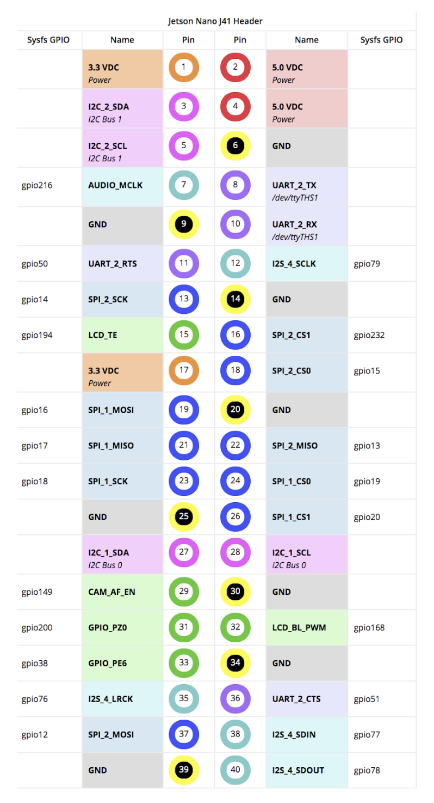{width="2.8347725284339456in" height="5.244792213473316in"}
sudo usermod -aG i2c jetson
sudo reboot now
VESC
VESC is a super cool Electronic Speed Controller (ESC) that runs open source code with
significantly more capabilities than a regular RC Car ESC.
VESCs are very popular for electrical skateboards, DIY electrical scooters, and robotics.
For robotics, one of the capabilities we will use the most is Odometry (speed and position)
based on the sensors on brushless motors (sensored) or to some extent, specially using the latest VESCs and firmware, it is also available with brushless motors without sensors (sensorless).
[https://vesc-project.com/]{.underline}
[VESC Setup Instructions]{.underline}
Logitech F710 controller
Place your Logitech F710 controller on the [x mode]{.mark}
(look for small switch in one of the controller face)
Connect the USB JoyStick Dongle into the JTN and then list the input devices again
ls /dev/input
(env) jetson@ucsdrobocar00:\~/projects/d3\$ ls /dev/input
by-id event0 event2 event4 mice mouse1
by-path event1 event3 [js0]{.mark} mouse0
We are looking for a js0
Other JoyStick Controllers
JoyStick Controllers - either the Logitech F-10 or PS4
Make sure your myconfig.py on your car directory reflects your controller
At the SBC
Connecting the LogiTech Controller is as easy as plugging in the USB dongle at the SBC.
Or if you have a PS4 controller
Connecting a PS4 Controller - Bluetooth
Deactivate the virtual environment if you are using one
deactivate
sudo apt-get install bluetooth libbluetooth3 libusb-dev
sudo systemctl enable bluetooth.service
[Need these for XBox Controller, skip for PS4]{.mark}
[sudo apt install sysfsutils]{.mark}
[sudo nano /etc/sysfs.conf]{.mark}
[add this line at the end of the file:]{.mark}
[/module/bluetooth/parameters/disable_ertm=1]{.mark}
[Reboot your SBC and see if ertm was disabled.]{.mark}
[cat /sys/module/bluetooth/parameters/disable_ertm]{.mark}
[The result should print Y]{.mark}
[At the PS4 controller]{.mark}
[Press the Share and PS buttons at the same time.]{.mark}
[The controller light will flash like a strobe light. That means it is in the pairing mode]{.mark}
[If the SBC is not seeing the PS4, you should try a mUSB cable between the SBC and the]{.mark}
[PS4 controller.]{.mark}
[At the SBC]{.mark}
sudo bluetoothctl
agent on
default-agent
scan on
[If your controller is off, Press Share/PlayStation]{.mark}
[example of a PS4 controller mac address]{.mark}
[Device A6:15:66:D1:46:1B Alias: Wireless Controller]{.mark}
connect YOUR_MAC_ADDRESS
trust YOUR_MAC_ADDRESS
quit
[If your ps4 turns off, turn it on again by pressing PS]{.mark}
[If you want to check controller was connected]{.mark}
ls /dev/input
[and see if js0 is listed.]{.mark}
[Lets test the joystick in a linux machine]{.mark}
sudo apt-get update
sudo apt-get install -y jstest-gtk
jstest /dev/input/js0
[Turn off your PS4 controller by pressing and holding PS]{.mark}
To remove a device, let\'s say another JoyStick that you don't use anymore
bluetoothctl
paired-devices
remove THE_CONTROLLER_MAC_ADDRESS
I had to try the method above twice, I rebooted the SBC in between
LD06 Lidar
Datasheet for LD06 lidar: [datasheet]{.underline}
Laser Map
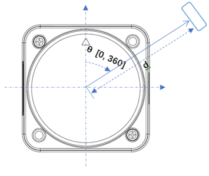{width="3.4479166666666665in" height="2.9040201224846895in"}
Mechanical drawing
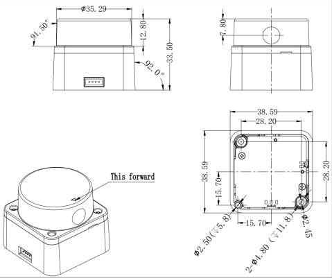{width="4.705857392825897in" height="3.932292213473316in"}
Previous Versions of Hardware
Skip the PWM Controller and EMO starting in 2022 Summer II. Left here for people using these as low cost alternative robot.
PWM Controller
If you are using a VESC, we don't use the PWM board, you can skip this part.
These PWM controllers are used only if one has a regular ESC (not the cool VESC).
[We are following the standard from RC CAR world, Channel 1 for Steering, Channel 2 for Throttle]{.mark}
Note:The default DonkeyCar build uses Channels 0 and 1
The UCSDRoboCar has at least two actuators. A steering servo and the DC motor connected to an Electronics Speed Controller (ESC). These are controlled by PWM (Pulse Width Modulation).
We use PWM Controller to generate the PWM signals, a device similar to the one in the picture below
{width="3.0268350831146105in" height="2.1093755468066493in"}
Shutdown the JTN if it is on by typing this command
sudo shutdown -h now
Connect the Steering Servo to the Channel 1
Connect the Throttle (Electronic Speed Controller ESC) to Channel 2
Observe the orientation of the 3 wires connector coming from the Steering Servo and ESC. Look for a the black or brown wire, that is the GND (-).
Lets install the PWM Controller
[https://www.jetsonhacks.com/nvidia-jetson-nano-j41-header-pinout/]{.underline}
Wiring adafruit board
You need to connect the following pins between the JTN and the PWM board:
Disconnect the power to the JTN
+3.3v, the two I2C pins (SDA and SCL) and ground
The 3.3V from the JTN goes to the VCC at the PWM board
Note: for the ground connection you need to skip one pin (skip pin 7)
-
3.3V - pin 1
-
SDA - pin 3
-
SCL- pin 5
-
No_Connect (Skip) - pin 7
-
Ground - pin 9
{width="2.115685695538058in" height="2.8177088801399823in"}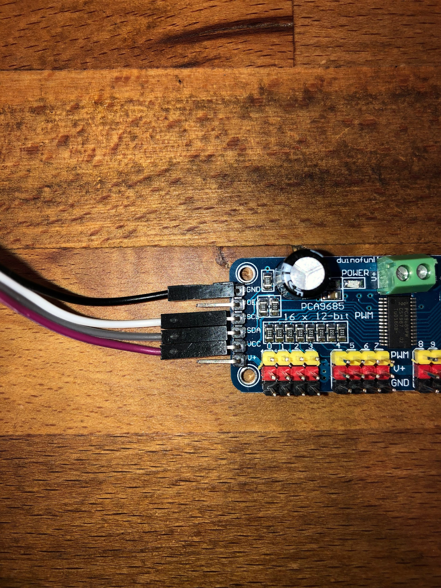{width="2.021828521434821in" height="2.6927088801399823in"}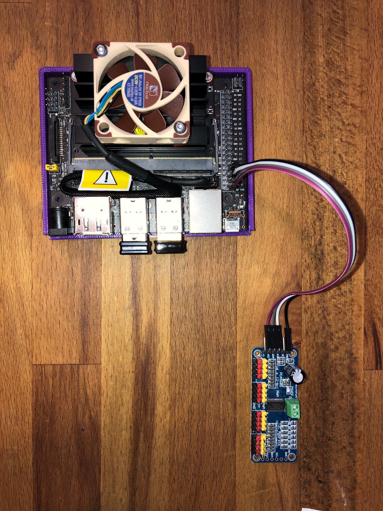{width="2.2616382327209097in" height="3.0364588801399823in"}
Detecting the PWM controller
Lets detect the PWM controller
sudo i2cdetect -r -y 1
0 1 2 3 4 5 6 7 8 9 a b c d e f
00: -- -- -- -- -- -- -- -- -- -- -- -- --
10: -- -- -- -- -- -- -- -- -- -- -- -- -- -- -- --
20: -- -- -- -- -- -- -- -- -- -- -- -- -- -- -- --
30: -- -- -- -- -- -- -- -- -- -- -- -- -- -- -- --
40: [40]{.mark} -- -- -- -- -- -- -- -- -- -- -- -- -- -- --
50: -- -- -- -- -- -- -- -- -- -- -- -- -- -- -- --
60: -- -- -- -- -- -- -- -- -- -- -- -- -- -- -- --
70: [70]{.mark} -- -- -- -- -- -- --
If you see the 40 and 70 above, the JTN is communicating with the PWM board
If you want to save some typing everytime you log into the JTN, add it to the end of .bashrc
nano \~/.bashrc
source /projects/envs/donkey/bin/activate
cd \~/projects/d3
Test is with a reboot
sudo reboot now
Emergency stop - Relay
If using an ESC vs. VESC follow this, with VESC skip
Connecting the Emergency Stop Circuit and Batteries into the Robot
For this part of your robot, you will have to do some hacking. That is part of the class.
The instructor will discuss the principle of the circuit and how to implement it with the component in your robot kit.
Long story short, the PWM Controller we use has a disable pin. If the correct logic is applied to it for example Logic 1 or 0 (3.3V or 0V) it will disable the PWM signals and the UCSDRoboCar will stop.
Think why one needs a separate EMO circuit vs. relying on the software, operating system and computer communicating with the PWM controller that then send PWM pulses to the actuators (steering servo and driving DC motor by the electronics speed controller)
First search on the web and read the datasheet of the emergency stop switch (EMO) components provided with the robot kit and discuss with your teammates how the EMO will work. You got two main components to build the WireLess EMO switch:
a) A Wireless Relay with wireless remote controls
b) A Red/Blue high power LED. This is to help the user know if the car is disable (Red) or Enabled (Blue).
Do some discussion with your Team and pay attention to the Lecture explanations:
-
What is the disable pin of the PWM controller?
-
Does it disable logic 1 or 0?
-
How to wire the wireless relay to provide the logic you need to disable the PWM controller? (1 or 0)
-
What pin at the Single Board Computer (SBC) can provide the logic you need to disable the PWM controller
-
How to connect the LEDs (Blue and Red) to indicate (BLUE - enabled), (RED - power is on / robot is disabled).
-
What is the fail safe situation, using the normally closed or normally open pins of the wireless relay to disable the PWM controller?
-
Note: The power to the PWM controller, that powers the LEDs, comes from ESC (Electronics Speed Controller). Therefore, you have to connect the robot batteries to the ESC and the ESC to the PWM controller. We are using channel 2 for the ESC. Channel 1 for the Steering. Then you need to power the ESC for the circuit to work ...
After you see that the EMO is working, i.e. wireless remote control disables the PWM, and the LEDs light up as planned, then you need to document your work. Please use a schematic software such as Fritzing ([http://fritzing.org/home/]{.underline}) to document your electrical schematic.
It may seem we did the opposite way; document after your build. In our case, you learned by looking at components information, thinking about the logic, and experimenting. Since you are an engineer you need to document even if it was a hack / test try first...
Working in a company you may do fast prototyping first then document your work when the risk is low. On larger projects you design, make schematics, diagrams, drawings, work instructions, then build it. Keep that in mind!
Now you can go drive your robot to collect data. Make sure to keep the
EMO handy and used when needed!
Also keep in mind that \<X> on your controller is like an emergency break.
When you run Donkey it will display the functions associated with the joystick buttons.
Read and remember them
Install OpenCV from Source
# Installing an Open Source Computer Vision (OpenCV) package with CUDA Support
# As of Jan 2020, NVIDIA is not providing OpenCV optimized to use CUDA (GPU acceleration).
# Search the web if you are curious why.
# [https://forums.developer.nvidia.com/t/opencv-cuda-python-with-jetson-nano/72902]{.underline}
#[Here are the instructions to build OpenCV from source]{.underline}
It will take an approximate 4 hrs to install opencv
1. jtop
2. 4
3. Add 6 GB of swap space and enable
4. cd \~
5. nano install_opencv.sh
6. Copy the entire contents of the attached [file]{.underline}
7. bash install_opencv.sh
DonkeyCar AI Framework
Setting up the DonkeyCar AI Framework
Reference [http://docs.donkeycar.com]{.underline}
Make sure that the OpenCV you want to use supporting CUDA is already available as a system
wide package.
Remember that when you are compiling and building software from source, it may take a few
hours ...
SSH into the Single Board Computer (SBC) e.g., RPI, JTN, JNX, etc.
# Install some packaged, some may be already installed
sudo apt update -y
sudo apt upgrade -y
sudo usermod -aG dialout jetson
If packages are being held back
sudo apt-get --with-new-pkgs upgrade
sudo apt-get install -y build-essential python3 python3-dev python3-pip libhdf5-serial-dev hdf5-tools libhdf5-dev zlib1g-dev zip libjpeg8-dev liblapack-dev libblas-dev gfortran libxslt1-dev libxml2-dev libffi-dev libcurl4-openssl-dev libssl-dev libpng-dev libopenblas-dev openmpi-doc openmpi-bin libopenmpi-dev libopenblas-dev git nano
Install RPi.GPIO clone for Jetson Nano
[https://github.com/NVIDIA/jetson-gpio]{.underline}
pip3 install Jetson.GPIO
If the pip install complains about ownership of the directory*
then execute the following command
sudo chown -R jetson:jetson /home/jetson/.cache/pip
ex:
WARNING: The directory \'/home/jetson/.cache/pip/http\' or its parent directory is not owned by the current user and the cache has been disabled. Please check the permissions and owner of that directory. If executing pip with sudo, you may want sudo\'s -H flag.
WARNING: The directory \'/home/jetson/.cache/pip\' or its parent directory is not owned by the current user and caching wheels has been disabled. check the permissions and owner of
that directory. If executing pip with sudo, you may want sudo\'s -H flag.
If pip breaks for some reason, you can reinstall it with the following lines
python3 -m pip uninstall pip
sudo apt install python3-pip --reinstall
If the install request elevated privileges, execute the following command
sudo pip3 install Jetson.GPIO
if pip has a new version
pip3 install --upgrade pip
Let's make sure the user jetson can use gpio
sudo groupadd -f -r gpio
sudo usermod -a -G gpio jetson
sudo cp /opt/nvidia/jetson-gpio/etc/99-gpio.rules /etc/udev/rules.d/
28Jan20 - did not work with JetPack3.4
15May21- did not work with JetPack4.5
19Oct21 - did not work with JetPack4.6
18Sep22 - did not work with JetPack4.6.2
Will get back to it later if the jetson user can not access GPIO
sudo udevadm control --reload-rules && sudo udevadm trigger
We want to have control over the versions of each software library to minimize the framework from
breaking after system-wide upgrades. Therefore, lets create a virtual environment for the
DonkeyCar.
Create a virtual environment for the DonkeyCar AI Framework.
If you want the virtual environment to be under the user's home directory, make sure to be on the
home directory for user jetson
If you have not done so, lets create a directory to store our projects and one subdirectory
to store virtual environments
cd \~
mkdir projects
cd projects
mkdir envs
cd envs
pip3 install virtualenv
if complains about user permission
pip3 install virtualenv --user
We will create a virtual environment called donkey since our AI framework is
based on the Donkey Car project
Since your SBC will be initially dedicated to the class AI framework (Donkey), at least until
your custom project starts, let's activate the donkey virtual env automatically every time the user
Jetson logs into the SBC. We can remove this settings later if needed when using ROS2
echo \"source \~/projects/envs/donkey/bin/activate\" >> \~/.bashrc
source \~/.bashrc
When a virtual environment is active, you should see (name_of_virtual_enviroment) in front of the terminal prompt.
ex:
[(donkey)]{.mark} jetson@ucsdrobocar-xxx-yy:\~\$
At this point, using pip and pip3 should be the same as using pip3 by default in this virtual environment.
https://docs.donkeycar.com/guide/robot_sbc/setup_jetson_nano/ 46
it is necessary to create a link to it
# Go to the folder where OpenCV\'s native library is built
cd /usr/local/lib/python3.6/site-packages/cv2/python-3.6
# Rename
mv cv2.cpython-36m-xxx-linux-gnu.so cv2.so
# Go to your virtual environments site-packages folder if previously set
cd \~/env/lib/python3.6/site-packages/
# Or just go to your home folder if not set a venv site-packages folder
cd \~
# Symlink the native library
ln -s /usr/local/lib/python3.6/site-packages/cv2/python-3.6/cv2.so
cv2.so
NOTE that it is almost mandatory to create a virtual environment in
order to properly install
# tensorflow, scipy and keras, and always a best practice.
cd \~/projects/envs/donkey/lib/python3.6/site-packages/
ln -s /usr/local/lib/python3.6/site-packages/cv2/python-3.6/cv2.so cv2.so
Confirm that OpenCV built from previous steps is working on the virtual environment Donkey
# Testing to see if OpenCV is installed in the virtual env.
python3 -c \'import cv2 as cv; print(cv.__version__)\'
(donkey) jetson@ucsdrobocar-xxx-yy:\~/projects/envs/donkey\$ python3 -c \'import cv2 as cv; print(cv.__version__)\'
4.6.0
# We won\'t use Python2, but just in case one will need it for some reason
python2 -c \'import cv2 as cv; print(cv.__version__)\'
We are not done installing software yet. We need to install more dependencies..
Make sure you have the donkey virtual environment activated
Remember some of these installs may take a while. It does not mean that the SBC is frozen, you
can see that the CPU is busy with top, htop, or jtop
source \~/projects/envs/donkey/bin/activate
pip3 install -U pip testresources setuptools
pip3 install -U futures==3.1.1 protobuf==3.12.2 pybind11==2.5.0
pip3 install -U cython==0.29.21 pyserial
pip3 install -U future==0.18.2 mock==4.0.2 h5py==2.10.0 keras_preprocessing==1.1.2 keras_applications==1.0.8 gast==0.3.3
pip3 install -U absl-py==0.9.0 py-cpuinfo==7.0.0 psutil==5.7.2 portpicker==1.3.1 six requests==2.24.0 astor==0.8.1 termcolor==1.1.0 wrapt==1.12.1 google-pasta==0.2.0
pip3 install -U gdown
Tensorflow
Now let\'s install [Tensorflow]{.underline} (Artificial Neural Network software).
"TensorFlow is an end-to-end open source platform for machine learning. It has a comprehensive, flexible ecosystem of tools, libraries and community resources that lets researchers push the state-of-the-art in ML and developers easily build and deploy ML powered applications."
Lets install Tensorflow enabled for GPU acceleration
Another chance for you to study while software is being installed...
Background information here
[https://docs.nvidia.com/deeplearning/frameworks/install-tf-jetson-platform/index.html]{.underline}
Remember you are using a low power SBC, depending on the size of the software it takes a while
We are installing Tensorflow outside the virtual environment so it is available for other uses
Here is another chance for you to study while software is being installed...
[Background information here]{.underline}
We are using JetPack 4.5 because the new DonkeyCar release was breaking the install with JetPack4.6.2. It requires Python 7 and newer.
Let\'s stick with JetPack4.5 for now
[https://developer.download.nvidia.com/compute/redist/jp/v45/tensorflow/]{.underline}
As of 18Sep22
tensorflow-1.15.4+nv20.12-cp36-cp36m-linux_aarch64.whl 218MB 2020-12-18 14:54:04
tensorflow-2.3.1+nv20.12-cp36-cp36m-linux_aarch64.whl 264MB 2020-12-18 14:54:06
tensorflow-1.15.5+nv21.2-cp36-cp36m-linux_aarch64.whl 218MB 2021-02-26 16:10:00
tensorflow-2.4.0+nv21.2-cp36-cp36m-linux_aarch64.whl 273MB 2021-02-26 16:10:14
tensorflow-1.15.5+nv21.3-cp36-cp36m-linux_aarch64.whl 218MB 2021-03-25 18:14:17
tensorflow-2.4.0+nv21.3-cp36-cp36m-linux_aarch64.whl 273MB 2021-03-25 18:14:48
tensorflow-1.15.5+nv21.4-cp36-cp36m-linux_aarch64.whl 218MB 2021-04-26 20:36:59
tensorflow-2.4.0+nv21.4-cp36-cp36m-linux_aarch64.whl 273MB 2021-04-26 20:38:13
tensorflow-1.15.5+nv21.5-cp36-cp36m-linux_aarch64.whl 218MB 2021-05-20 20:19:08
tensorflow-2.4.0+nv21.5-cp36-cp36m-linux_aarch64.whl 274MB 2021-05-20 20:19:20
tensorflow-1.15.5+nv21.6-cp36-cp36m-linux_aarch64.whl 220MB 2021-06-29 18:18:14
tensorflow-2.5.0+nv21.6-cp36-cp36m-linux_aarch64.whl 293MB 2021-06-29 18:18:43
# This will install the latest tensorflow compatible with the Jet Pack as a system package
Alternatively if you want to chose a particular version:
pip3 install --pre --extra-index-url
https://developer.download.nvidia.com/compute/redist/jp/v45 tensorflow==2.3.1
Previous versions install
pip3 install --pre --extra-index-url https://developer.download.nvidia.com/compute/redist/jp/v45 tensorflow==2.3.1
pip3 install --pre --extra-index-url https://developer.download.nvidia.com/compute/redist/jp/v45 tensorflow==2.4.0
Remember you are using a low power SBC, depending on the size of the software it takes a while
Lets verify that Tensorflow installed correctly
python3
import tensorflow
exit()
No errors should be reported
If you get errors importing Tensorflow 2.5.0, try these
pip install numpy==1.19.2
ex:
If you see info with libcuda it means, Tensorflow will be accelerated using the CUDA
cores of the SBC's GPU
(donkey) jetson@ucsdrobocar-xxx-yy:\~/projects\$ python3
Python 3.6.9 (default, Jun 29 2022, 11:45:57)
[GCC 8.4.0] on linux
Type \"help\", \"copyright\", \"credits\" or \"license\" for more information.
>>> import tensorflow
2022-08-09 12:19:25.285765: I tensorflow/stream_executor/platform/default/dso_loader.cc:53] Successfully opened dynamic library [libcudart.]{.mark}so.10.2
>>> exit()
Verifying that TensorRT was installed
sudo apt-get update
(donkey) jetson@ucsdrobocar-xxx-yy:\~\$ sudo apt-get install tensorrt
Reading package lists... Done
Building dependency tree
Reading state information... Done
tensorrt is already the newest version (7.1.3.0-1+cuda10.2).
0 upgraded, 0 newly installed, 0 to remove and 0 not upgraded.
dpkg -l | grep TensorRT
arm64 Meta package of TensorRT
ii uff-converter-tf 7.1.3-1+cuda10.2 arm64 UFF converter for TensorRT package
# Periodically the versions of tensorflow, cuDNN / CUDA give us conflict. Here is a list of compatibility
[https://www.tensorflow.org/install/sourcegpu]{.underline}
Installing pycuda - it will take a while again...
pip3 install pycuda
If you are having errors installing pycuda use the following command:
pip3 install pycuda==2020.1
PyTorch
Lets install [PyTorch]{.underline} too
"An open source machine learning framework that accelerates the path from research prototyping to production deployment"
Again, these steps will take some time. Use your time wisely
cd \~/projects
wget https://nvidia.box.com/shared/static/p57jwntv436lfrd78inwl7iml6p13fzh.whl
cp p57jwntv436lfrd78inwl7iml6p13fzh.whl torch-1.8.0-cp36-cp36m-linux_aarch64.whl
pip3 install torch-1.8.0-cp36-cp36m-linux_aarch64.whl
sudo apt-get install libjpeg-dev zlib1g-dev libpython3-dev libavcodec-dev libavformat-dev libswscale-dev
git clone -b v0.9.0 https://github.com/pytorch/vision torchvision
cd torchvision
python setup.py install
cd ../
# it will take a good while again. Keep studying other things...
Testing Pythorch install
python
import torch
print(torch.__version__)
exit()
ex:
(donkey) jetson@ucsdrobocar-xxx-yy:\~/projects\$ python
Python 3.6.9 (default, Jan 26 2021, 15:33:00)
[GCC 8.4.0] on linux
Type \"help\", \"copyright\", \"credits\" or \"license\" for more information.
>>> import torch
>>> print(torch.__version__)
1.8.0
>>> exit()
(donkey) jetson@ucsdrobocar-xxx-yy:\~/projects\$
One more test
pip3 show torch
ex:
Name: torch
Version: 1.8.0
Summary: Tensors and Dynamic neural networks in Python with strong GPU acceleration
Home-page: https://pytorch.org/
Author: PyTorch Team
Author-email: packages@pytorch.org
License: BSD-3
Location: /home/jetson/projects/envs/donkey/lib/python3.6/site-packages
Requires: dataclasses, typing-extensions, numpy
Required-by: torchvision
As of Summer II 2022, we are using a new Stereo Camera from Luxonis
Configuring OAKD Lite
Open a terminal window and run the following commands:
sudo apt update && sudo apt upgrade
# after upgrades
sudo reboot now
If you have not added the extra swap space while building OpenCV, please add it
You can use jtop to add more swap space using the left and right keys and clicking the plus button
jtop
4
 {width="4.005208880139983in"
height="1.776890857392826in"}
{width="4.005208880139983in"
height="1.776890857392826in"}
Add 4G of swap and press \<S> to enable it.
 {width="3.0156255468066493in"
height="2.161738845144357in"}
{width="3.0156255468066493in"
height="2.161738845144357in"}
Alternatively you can use the command line
# Disable ZRAM:
sudo systemctl disable nvzramconfig
# Create 4GB swap file
sudo fallocate -l 4G /mnt/4GB.swap
sudo chmod 600 /mnt/4GB.swap
sudo mkswap /mnt/4GB.swap
If you have an issue with the final command, you can try the following:
sudo nano /etc/fstab
# Add this line at the bottom of the file
/mnt/4GB.swap swap swap defaults 0 0
# Reboot
sudo reboot now
Installing dependencies
Navigate to the directory where you will be installing the luxonis libraries using cd \~/projects
sudo nano install_dependencies.sh
Copy the entire contents of the file: [install_dependencies.sh]{.underline}
bash install_dependencies.sh
echo \"export OPENBLAS_CORETYPE=ARMV8\" >> \~/.bashrc
echo \'SUBSYSTEM==\"usb\", ATTRS{idVendor}==\"03e7\", MODE=\"0666\"\' | sudo tee /etc/udev/rules.d/80-movidius.rules
sudo udevadm control --reload-rules && sudo udevadm trigger
Navigate using cd to the folder where you would like to install the
camera example files and requirements
cd \~/projects
git clone [https://github.com/luxonis/depthai-python.git]{.underline}
cd depthai-python/examples
python3 install_requirements.py
If you want to test the camera and you have remote desktop
[NoMachine]{.underline} already installed and the OAKD Lite is connected to JTN , run the following in the terminal on a NoMachine session
Navigate to the examples folder in depthai-python first and then
cd ColorCamera
python3 rgb_preview.py
You should be able to see preview video on the No machine desktop
Installing Donkeycar AI Framework
Lets Install the Donkeycar AI Framework
If you are upgrading from Donkey3 then save the values from your calibration that
you had on
myconfig.py
Then let\'s remove the old donkeycar and d3 directories
cd \~/projects
rm -rf donkeycar
rm -rf d3
If the projects directory was not created yet, mkdir projects
cd \~/projects
Get donkeycar from Github
git clone https://github.com/autorope/donkeycar
cd donkeycar
cd \~/projects
git clone https://github.com/autorope/donkeycar
cd donkeycar
git fetch --all --tags -f
git checkout 4.5.1
pip install -e .[[nano]{.mark}]
Install more dependencies
sudo apt-get install python3-dev python3-numpy python-dev libsdl-dev libsdl1.2-dev libsdl-image1.2-dev libsdl-mixer1.2-dev libsdl-ttf2.0-dev libsdl1.2-dev libsmpeg-dev python-numpy subversion libportmidi-dev ffmpeg libswscale-dev libavformat-dev libavcodec-dev libfreetype6-dev libswscale-dev libjpeg-dev libfreetype6-dev
pip install pygame
Lets enable the use of synchronization of files with remote computers using rsync
sudo apt-get install rsync
This part will take a bit of time. Be patient, please keep in mind that you are using a low power
single board computer (SBC).
If you are curious if your SBC is really working, you can open another tab in the terminal window
or a complete new terminal window, ssh to the JTN then execute the command top or htop
look at the CPU utilization...
Note I had problems installing Donkey with the latest version of pip (20.0.2). I had to revert
to an earlier version of pip. See versions of pip here [https://pip.pypa.io/en/stable/news/]{.underline}
On 28 May20, it worked. Keeping the line below for reference in case the problem happens again
# pip install --upgrade pip==18.1
Install Donkey with
pip3 install -e .[nano]
Proceed to [Create a Car]{.underline}
# 1/30/24
# [mlopezme@ucsd.edu]{.underline} []{.mark}
# Moises, did you change the instructions to have nano45? It was giving problems in WI24. Does it install Donkey 4.5.1? That is what we need
# For ECE MAE 148 when we are ready for the latest version of Donkey, let\'s say using a docker container
cd \~/projects
git clone https://github.com/autorope/donkeycar
cd donkeycar
git fetch --all --tags -f
latestTag=\$(git describe --tags `git rev-list --tags --max-count=1`)
git checkout \$latestTag
pip install -e .[[nano45]{.mark}]
It may take a while. You may not see progress on the terminal. You can ssh to the SBC
and run the command top or htop or jtop from another terminal/tab
Grab a coffee, go study something ...
Create a Car
Let's create a car on the path \~/project/d4
cd \~/projects/donkeycar
donkey createcar --path \~/projects/d4
If complains about old version of numpy and the install fails
pip install numpy --upgrade
________ ______ _________
___ __ \_______________ /___________ __ __ ____/_____ ________
__ / / / __ \_ __ \_ //_/ _ \_ / / / _ / _ __ `/_ ___/
_ /_/ // /_/ / / / / ,\< / __/ /_/ / / /___ / /_/ /_ /
/_____/ \____//_/ /_//_/|_| \___/_\__, / \____/ \__,_/ /_/
/____/
using donkey v4.3.22 ...
Creating car folder: /home/jetson/projects/d4
making dir /home/jetson/projects/d4
The version of the Donkey car may be newer than the one above...
# For Winter 2024
Make sure the DonkeyCar is version 4.5.1. The latest version of the DonkeyCar (5.x) does not work at the Jetson Nano yet.
You spent several hours on this configuration right?! Please make a backup of your uSD card - "[Backup of the uSD Card]{.underline}"
If you are using a PWM board with a ESC vs. a VESC
Starting on FALL'22, we use a VESC for controlling the BLDC motor. Skip setting the PWM board. We left here for people that may want to use it on their own robot
Again, if you using an ESC skip the PWM board setup
#Modifying PWM board configuration
Now we need to edit the myconfig.py to change the default bus number
for the PWM board
(PCA9685)
nano myconfig.py
Jetson Nano: set PCA9685_I2C_BUSNUM = 1
Remove the comment from the line; "" and add "1" to the BUSNUM
PCA9685_I2C_BUSNUM = 1 None ...
Modifying Camera
Change the camera type to MOCK to enable us to test the system without a camera
nano myconfig.py
CAMERA
CAMERA_TYPE = \"MOCK\" (PICAM|WEBCAM|CVCAM|CSIC|V4L|MOCK)
# if you have USB camera connected to the JTN , use WEBCAM
# And change this line so the Donkey can run using the web interface
USE_JOYSTICK_AS_DEFAULT = False
In summary you change these 3 lines in the myconfig.py to be able to test your Donkey installation
# if using the PWM board the PWM board and ESC vs. VESC
PCA9685_I2C_BUSNUM = 1
CAMERA_TYPE = \"MOCK\"
USE_JOYSTICK_AS_DEFAULT = False
Quick Test
Lets test the Donkey AI framework install
python manage.py drive
Adding part PWMSteering.
Adding part PWMThrottle.
Tub does NOT exist. Creating a new tub...
New tub created at: /home/jetson/projects/d3/data/tub_1_19-08-05
Adding part TubWriter.
You can now go to \<your pi ip address>:8887 to drive your car.
Starting vehicle...
8887
Lets connect to the JTN by using a web browser from your PC
[http://ucsdrobocar-xxx-yy:8887]{.underline}
You should see a screen like this
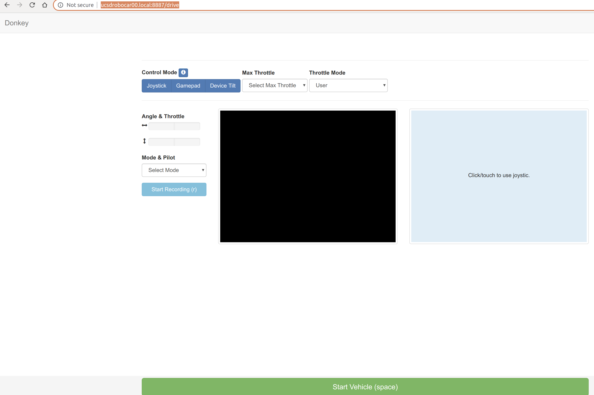{width="4.6631517935258096in" height="3.119792213473316in"}
We stop the Donkey with Ctrl-C
Ctrl-C
Modifying Joystick
Now let\'s change the type of joystick we use with Donkey
nano myconfig.py
JOYSTICK
[USE_JOYSTICK_AS_DEFAULT = True]{.mark} when starting the manage.py, when True, wil\$
JOYSTICK_MAX_THROTTLE = 0.5 this scalar is multiplied with the -1 to\$
JOYSTICK_STEERING_SCALE = 1.0 some people want a steering that is less\$
AUTO_RECORD_ON_THROTTLE = True if true, we will record whenever throttle\$
[CONTROLLER_TYPE=\'F710\']{.mark} (ps3|ps4|xbox|nimbus|wiiu|F710)
python manage.py drive
ex
Starting vehicle...
Opening /dev/input/js0...
Device name: Logitech Gamepad F710
recorded 10 records
recorded 20 records
recorded 30 records
recorded 40 records
erased last 100 records.
E-Stop!!!
recorded 10 records
recorded 20 records
recorded 30 records
recorded 40 records
recorded 50 records
The Right Joystick is the Throttle, the Left Joystick is the Steering
The Y Button deletes 5s of driving at the default configuration =100 records at 20 Hz
The A Button is the emergency break
Joystick Controls:
+------------------+---------------------------+
| control | action |
+------------------+---------------------------+
| start | toggle_mode |
| B | toggle_manual_recording |
| Y | erase_last_N_records |
| A | emergency_stop |
| back | toggle_constant_throttle |
| R1 | chaos_monkey_on_right |
| L1 | chaos_monkey_on_left |
| circle | show_record_acount_status |
| R2 | enable_ai_launch |
| left_stick_horz | set_steering |
| right_stick_vert | set_throttle |
+------------------+---------------------------+
If your joystick is not returning to neutral
You can add a deadzone value
on myconfig.py
ex:
NETWORK_JS_SERVER_IP = \"192.168.0.1\"when listening for network joystick cont\$
JOYSTICK_DEADZONE = 0.01 when non zero, this is the smallest throt\$
JOYSTICK_THROTTLE_DIR = -1.0 use -1.0 to flip forward/backward, use \$
Lets Integrate the JTN and PWM Controller into the RC Chassis
Charge your LiPo Battery
After you charge your Lithium Polymer (LiPo) battery(ries) - [some info here]{.underline}
Connect the battery(ries) and batteries monitor/alarm
Please do not use the batteries without the batteries monitor/alarms
If you discharge a LiPO batteries below a threshold lets say 3.0
Calibration of the Throttle and Steering
Before you develop code or you can use someone\'s code to control a robot, we need to calibrate the actuator/mechanism to find out its range of motion compared to the control / command a computer will send to the controller of the actuator/mechanism.
The calibration is car specific. If you use the same platform, the numbers should be really close. Otherwise, you will need to calibrate your car.
[MAKE SURE THE ROBOT IS ON THE RC CAR STAND]{.mark}
[MAKE SURE THE ROBOT IS ON THE RC CAR STAND]{.mark}
[MAKE SURE THE ROBOT IS ON THE RC CAR STAND]{.mark}
[MAKE SURE THE ROBOT IS ON THE RC CAR STAND]{.mark}
[MAKE SURE THE ROBOT IS ON THE RC CAR STAND]{.mark}
Follow the safety guidelines provided in person in the class.
If something does not sound right, don't do it. Safety first.
Power the JTN
Power the Electronic Speed Controller (ESC)
Lets run a Python command to calibrate Steering and Throttle
The donkey commands need to be run from the directory you created for your car, i.e., \~/projects/[d4]{.mark}
If you have not done so, SSH into the JTN
If needed, change directory to d4
cd \~/projects/d4
Begin Calibration
donkey calibrate [--channel 1]{.mark} --bus 1
Please make sure that when you are trying the steering values you do not keep the steering
servo max out.
Please reduce go back 10 or 15 values when you notice the servo motor is not moving or making a
constant noise. If you leave the servo motor max-out you will most likely burn it.
If by any chance your software locks-up, please turn off the ESC immediately.
Then once you run the calibrate again, issue the center value before turning in the ESC again
Note that after 10 values or so the calibration may time out. Just run it again.
Try some values around 390 to center the steering
Enter a PWM setting to test(100-600)370
Enter a PWM setting to test(100-600)380
Enter a PWM setting to test(100-600)390
Enter a PWM setting to test(100-600)400
[In my case]{.mark}, 390 seems to center the steering
Take note of the left max and right max value. We will be able to adjust these after we try driving the
car so it goes straight.
ex:
390 - Center
[290]{.mark} - Steering left max
[490]{.mark} - Steering right max
Note: If the donkey calibration times-out, just run it again.
You can end the calibration by typing CTRL-C
[MAKE SURE THE ROBOT IS ON THE RC CAR STAND]{.mark}
[MAKE SURE THE ROBOT IS ON THE RC CAR STAND]{.mark}
[MAKE SURE THE ROBOT IS ON THE RC CAR STAND]{.mark}
[MAKE SURE THE ROBOT IS ON THE RC CAR STAND]{.mark}
[MAKE SURE THE ROBOT IS ON THE RC CAR STAND]{.mark}
Now to calibrate the Throttle Electronic Speed Controller ESC (THROTTLE)
Following the standard for R/C cars. Throttle goes on channel [2]{.mark}
donkey calibrate [--channel 2 --bus 1]{.mark}
Enter a PWM setting to test(100-600)370
Enter a PWM setting to test(100-600)[380]{.mark} (neutral)
Enter a PWM setting to test(100-600)390
On my case, 380 when I power up the ESC seems to be the middle point (neutral),
I will use 380. Your case may vaires. 370 seems a common value
Neutral when power the ESC - [380]{.mark}
[Make sure the car is balanced over the car stand]{.mark}
Then go in increments of 10 until you can no longer hear an increase on the speed
of the car. Don't worry much about the max speed since we won't drive that fast autonomously
and during training the speed will be limited.
Max speed forward - [490]{.mark}
Reverse on RC cars is a little tricky because the ESC needs to receive
a reverse pulse, zero pulse, and again reverse pulse to start to go backwards.
Use the same technique as above set the PWM setting to your zero throttle
(lets say 380 or 370).
[Enter the reverse value]{.mark}, then the [zero throttle (e.g., 370)]{.mark} value, then a [reverse value again]{.mark}.
Enter values +/- 10 of the reverse value to find a reasonable reverse speed. Remember this reverse PWM value.
(dk)pi@jackrpi02:\~/projects/d3 \$
donkey calibrate [--channel 2 --bus 1]{.mark}
Enter a PWM setting to test(100-600)360
Enter a PWM setting to test(100-600)[370]{.mark}
Enter a PWM setting to test(100-600)360
Enter a PWM setting to test(100-600)350
Enter a PWM setting to test(100-600)340
Enter a PWM setting to test(100-600)330
Enter a PWM setting to test(100-600)320
I got for Throttle
[490]{.mark} - Max speed forward
[380]{.mark} - Neutral
[300]{.mark} - Max speed backwards
---
For my robocar I have:
Steering
[290]{.mark} - Steering left max
[490]{.mark} - Steering right max
Throttle
[490]{.mark} - Max speed forward
[380]{.mark} - Neutral
[300]{.mark} - Max speed backwards
Saving car configuration file
Now let\'s write these values into the car configuration file
Edit the file my config.py
nano myconfig.py
Change these values according to YOUR [calibration values]{.mark} and [where you have the Steering Servo and ESC]{.mark} connected
...
STEERING
STEERING_CHANNEL = 1 channel on the 9685 pwm board 0-15
STEERING_LEFT_PWM = 290 pwm value for full left steering
STEERING_RIGHT_PWM = 490 pwm value for full right steering
THROTTLE
THROTTLE_CHANNEL = 2 channel on the 9685 pwm board 0-15
THROTTLE_FORWARD_PWM = 490 pwm value for max forward throttle
THROTTLE_STOPPED_PWM = 380 pwm value for no movement
THROTTLE_REVERSE_PWM = 300 pwm value for max reverse throttle
Also, change these
CAMERA
CAMERA_TYPE = \"WEBCAM\" (PICAM|WEBCAM|CVCAM|CSIC|V4L|MOCK)
9865, overrides only if needed, ie. TX2..
PCA9685_I2C_ADDR = 0x40 I2C address, use i2cdetect to validate this numb\$
PCA9685_I2C_BUSNUM = 1 None will auto detect, which is fine on the pi. \$
JOYSTICK
USE_JOYSTICK_AS_DEFAULT = True when starting the manage.py, when True, wil\$
and if needed to zero the joystick
JOYSTICK_DEADZONE = 0.01 when non zero, this is the smallest thro\$
Note: When driving the robot, if you robot has too much power or not enough power
you can adjust the max_throttle
JOYSTICK_MAX_THROTTLE = 0.5
This also will be your starting power setting when using the constant throttle autopilot.
You can test driving your robot by issuing
python manage.py drive
If you are using the VESC and OAKD camera on the physical car
VESC
Ensure that you have already configured the VESC device using the VESC Tool Software
Edit the myconfig.py to have these values
DRIVE_TRAIN_TYPE = \"VESC\"
VESC_MAX_SPEED_PERCENT =.2 ## Max speed as a percent of actual max speed
VESC_SERIAL_PORT= \"/dev/ttyACM0\" ## check this val with ls /dev/tty*
VESC_HAS_SENSOR= True
VESC_START_HEARTBEAT= True
VESC_BAUDRATE= 115200
VESC_TIMEOUT= 0.05
VESC_STEERING_SCALE = .5
VESC_STEERING_OFFSET = .5
DONKEY_GYM = False
(we will leave the CAMERA_TYPE = "MOCK" for now to make sure we can drive the car with the VESC)
Download the following files
[https://drive.google.com/drive/folders/19TS3VyNXQPBSr41yiPaxpI1lnxClI2c8?usp=sharing]{.underline}
And replace them on the Jetson in the locations shown in the images below. Note - to get the files on the jetson you can use SFTP (secure file transfer protocol):
Examples on how to use SFTP:\ sftp jetson@ucsdrobocar-148-xx.local
cd To the directory you want to go to
put /File/Path/On/Your/Computer
alternatively
get filename /File/Location/You/Want/Them/Go/On/Your/Computer
To get a directory
get -rf filename /File/Location/You/Want/Them/Go/On/Your/Computer
type \"exit\" to disconnect
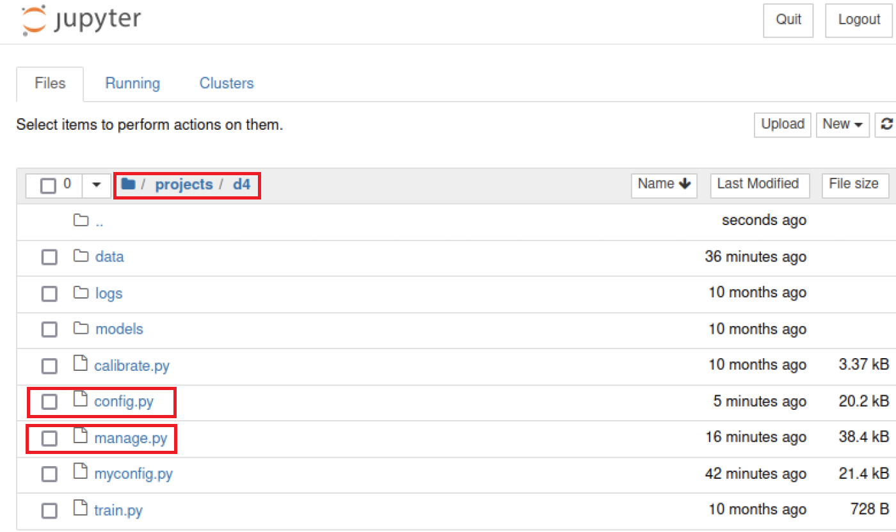{width="4.351609798775153in" height="3.276042213473316in"}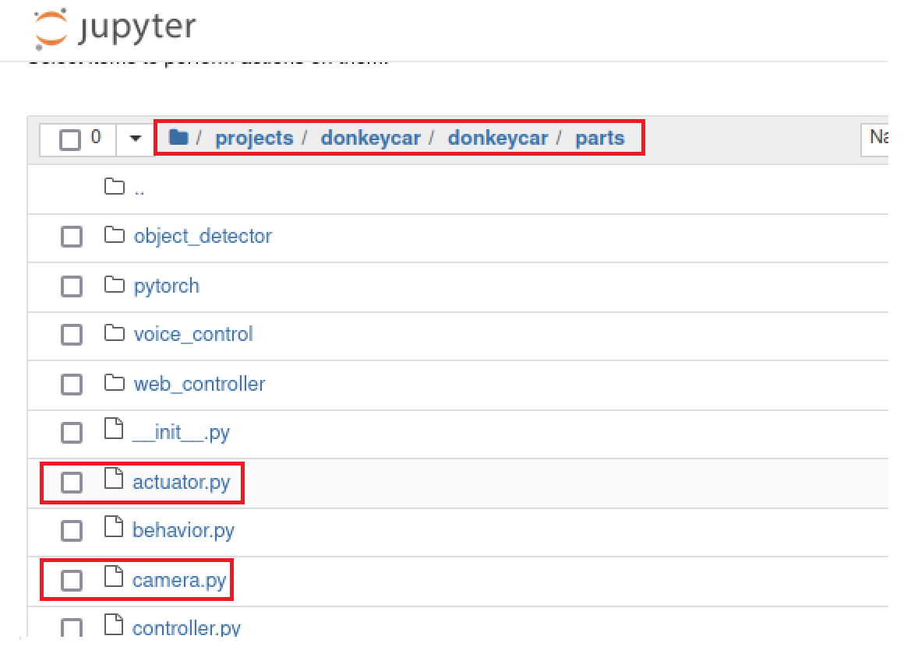{width="4.307292213473316in" height="3.131517935258093in"}
Once these have been replaced, you should run
python manage.py drive
It should first throw a pyvesc import error. Follow the description in the terminal to install the needed libraries
Then run it again. It should throw a permissions error. Follow the advice on how to fix the error with chmod
Int(10) error bug fix (Credit Saimai Lau and Albert Chang):\ When running python manage.py drive, the intermittent \"invalid literal for int() with base 10: \'None\' error is from the VESC package checking whether the version of the VESC is below 3.0, so we can comment out that part since we\'re using 6.0 just do
nano /home/jetson/projects/envs/donkey/lib/python3.6/site-packages/pyvesc/VESC/VESC.py
and put # at the beginning of lines 38-40 Then \^S to save and \^X to exit
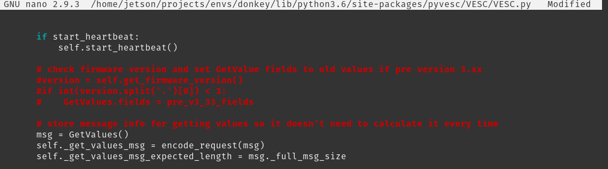{width="7.5in" height="2.0833333333333335in"}
Error explanation: The self.get_firmware_version() get thes version by requesting it from the VESC and reading the replied bytes, but sometimes the data is lost or incomplete so the function returns \'None\' as the version. We already know the version is 6.0 so we don't need this function.
OAKD
Once you have the VESC driving the car, you will need to make sure you have set up the document by following the instructions labeled Configuring OAKD Lite found [earlier in this document]{.underline}
Edit the myconfig.py camera type to OAKD
CAMERA_TYPE = \"OAKD\"
Make sure the camera is working by checking the images that are being saved to the /data/images directory.
The easiest way to do this is to go to
[http://localhost:8887]{.underline} while running donkeysim, and you should be able to see a livestream from the camera. Note - if several people are running donkeysim at the same time on the same wifi this interface may get buggy
You can also do this by either:
transferring the files to you laptop or virtual machine
with scp, rsync, winscp (windows) or filezilla (mac)
Or
Using NoMachine by following the instructions found [here]{.underline} in this document
GNSS Configuration:
How to Plug PointOneNav to Donkeycar
-
Make sure your user is added to the dialout group. If not
a. sudo adduser jetson dialout
b. sudo reboot now
-
Download [https://drive.google.com/file/d/1BK_UjH-He9d_D4eObWMHzpHHCqmtq75h/view?usp=share_link]{.underline} (Note that this zip file cannot be shared outside of the class. It is still proprietary as of now)
-
Unzip.
-
Run
a. cd quectel-lg69t-am.0.15.0/p1_runner
b. deactivate (This should get you out of the current environment)
c. wget https://github.com/conda-forge/miniforge/releases/latest/download/Mambaforge-pypy3-Linux-aarch64.sh .
d. bash Mambaforge-pypy3-Linux-aarch64.sh
e. Reboot the jetson
f. mamba create --name py37 -c conda-forge python=3.7 pip
g. mamba activate py37
h. [pip3 install -e .]{.mark}
i. %If this fails, you can try just going to the p1_runner directory and running the python3 bin/config_tool.py command, and then doing "pip install \_\_\_\_" for all the missing things, you may just need 1. pip install pyserial 2. pip install fusion_engine_client 3. pip install pynmea 4. pip install ntripstreams 5. pip install websocketsi. python3 bin/config_tool.py reset factory
j. python3 bin/config_tool.py apply uart2_message_rate nmea gga on
k. python3 bin/config_tool.py save
l. python3 bin/runner.py --device-id \<polaris_username> --polaris \<polaris_password> --device-port /dev/ttyUSB1
(if not getting any data including Nans try USB0)
Note: The GPS corrections will only happen when you are actively running runner.py. I recommend making a bashrc command that you can run to start up the runner.py program easily in a 2nd terminal while using the GPS for anything.
-
Create a project with the DonkeyCar path follow template
a. Open a new terminal window
b. Make sure that the donkey car environment is running
i. source \~/projects/envs/donkey/bin/activatec. cd \~/projects
d. donkey createcar --path ./mycar --template path_follow
-
Set the following in the myconfig.py
a. GPS_SERIAL = "/dev/ttyUSB2" (USB1 if USB0 used above)
b. GPS_SERIAL_BAUDRATE = 460800
c. GPS_DEBUG = True
d. HAVE_GPS = True
e. GPS_NMEA_PATH = None
-
Also set things like the VESC parameters in myconfig.py. You can copy these over from the donkeycar you created earlier.
-
Run
a. python3 manage.py drive
-
You should see GPS positions being outputted after you run Donkeycar. If you don't want to output set GPS_DEBUG to False
-
Configure button actions
a. SAVE_PATH_BTN is the button to save the in-memory path to a file.
b. LOAD_PATH_BTN is the button to (re)load path from the csv file into memory.
c. RESET_ORIGIN_BTN is the button to set the current position as the origin.
d. ERASE_PATH_BTN is the button to erase path from memory and reset the origin.
e. TOGGLE_RECORDING_BTN is the button to toggle recording mode on or off. Note that there is a pre-assigned button in the web ui, so there is not need to assign this button to one of the web/w* buttons if you are using the web ui.
f. INC_PID_D_BTN is the button to change PID \'D\' constant by PID_D_DELTA.
g. DEC_PID_D_BTN is the button to change PID \'D\' constant by -PID_D_DELTA
h. INC_PID_P_BTN is the button to change PID \'P\' constant by PID_P_DELTA
i. DEC_PID_P_BTN is the button to change PID \'P\' constant by -PID_P_DELTA
The logitech buttons are named stuff like "X" or "R1" See the example config below.\ SAVE_PATH_BTN = \"R1\" # button to save path
LOAD_PATH_BTN = \"X\" # button (re)load path
RESET_ORIGIN_BTN = \"B\" # button to press to move car back to origin
ERASE_PATH_BTN = \"Y\" # button to erase path
TOGGLE_RECORDING_BTN = \"L1\" # button to toggle recording mode
INC_PID_D_BTN = None # button to change PID \'D\' constant by PID_D_DELTA
DEC_PID_D_BTN = None # button to change PID \'D\' constant by -PID_D_DELTA
INC_PID_P_BTN = \"None\" # button to change PID \'P\' constant by PID_P_DELTA
DEC_PID_P_BTN = \"None\" # button to change PID \'P\' constant by -PID_P_DELTA
#
-
Recording a path
a. The algorithm assumes we will be driving in a continuous connected path such that the start and end are the same. You can adjust the space between recorded waypoints by editing the PATH_MIN_DIST value in myconfig.py You can change the name and location of the saved file by editing the PATH_FILENAME value.
b. Enter User driving mode using either the web controller or a game controller.
c. Move the car to the desired starting point
d. Erase the path in memory (which will also reset the origin).
i. Make sure to reset the origin!!! If you didn't need to erase the path in memory you can juste. Toggle recording on.
f. Drive the car manually around the track until you reach the desired starting point again.
g. Toggle recording off.
h. If desired, save the path.
-
Following a path
a. Enter User driving mode using either the web controller or a game controller.
b. Move the car to the desired starting point - make sure it's the same one from when you recorded the path
c. Reset the origin (be careful; don\'t erase the path, just reset the origin).
d. Load the path
e. Enter Autosteering or Autopilot driving mode. This is normally done by pressing the start button either once or twice If you are in Autosteering mode you will need to manually provide throttle for the car to move. If you are in Autopilot mode the car should drive itself completely.
-
Configuring Path Follow Parameters
a. So the algorithm uses the cross-track error between a desired line and the vehicle\'s measured position to decide how much and which way to steer. But the path we recorded is not a simple line; it is a lot of points that is typically some kind of circuit. As described above, we use the vehicle\'s current position to choose a short segment of the path that we use as our desired track. That short segment is recalculated every time we get a new measured car position. There are a few configuration parameters that determine exactly which two points on the path that we use to calculate the desired track line.
i. PATH_SEARCH_LENGTH = None \# number of points to search for closest point, None to search entire path ii. PATH_LOOK_AHEAD = 1 \# number of points ahead of the closest point to include in cte track iii. PATH_LOOK_BEHIND = 1 \# number of points behind the closest point to include in cte trackb. Generally, if you are driving very fast you might want the look ahead to be larger than if driving slowly so that your steering can anticipate upcoming curves. Increasing the length of the resulting track line, by increasing the look behind and/or look ahead, also acts as a noise filter; it smooths out the track. This reduces the amount of jitter in the controller. However, this must be balanced with the true curves in the path; longer track segments effectively \'flatten\' curves and so can result in understeer; not steering enough when on a curve.
-
Determining PID Coefficients
a. The PID coefficients are the most important (and time consuming) parameters to configure. If they are not correct for your car then it will not follow the path. The coefficients can be changed by editing their values in the myconfig.py file.
b. PID_P is the proportional coefficient; it is multiplied with the cross-track error. This is the most important parameter; it contributes the most to the output steering value and in some cases may be all that is needed to follow the line. If this is too small then car will not turn enough when it reaches a curve. If this to too large then it will over-react to small changes in the path and may start turning in circles; especially when it gets to a curve.
c. PID_D is the differential coefficient; it is multiplied with the change in the cross-track error. This parameter can be useful in reducing oscillations and overshoot.
d. PID_I is the integral coefficient; it is multiplied with the total accumulated cross-track error. This may be useful in reducing offsets caused by accumulated error; such as if one wheel is slightly smaller in diameter than another.
e. Determining PID Coefficients can be difficult. One approach is:
i. First determine the P coefficient. ii. zero out the D and the I coefficients. iii. Use a kind of \'binary\' search to find a value where the vehicle will roughly follow a recorded straight line; probably oscillating around it. It will be weaving iv. Next find a D coefficient that reduces the weaving (oscillations) on a straight line. Then record a path with a tight turn. Find a D coefficient that reduces the overshoot when turning. v. You may not even need the I value. If the car becomes unstable after driving for a while then you may want to start to set this value. It will likely be much smaller than the other values. vi. Be patient. Start with a reasonably slow speed. Change one thing at a time and test the change; don\'t make many changes at once. Write down what is working. vii. Once you have a stable PID controller, then you can figure out just how fast you can go with it before autopilot becomes unstable. If you want to go faster then set the desired speed and start tweaking the values again using the method suggested above.
Driving the Robot to Collect data
Remember you are driving at max of x (0.x) Throttle power based on the
myconfig.py that you edited.
The robot is not controlling speed but power given the motor using PWM values
Transmitted from the Single Board Computer (SBC) like a Jetson Nano (JTN) to the
Electronic Speed Controller (ESC).
To reverse you may have to reverse, stop, reverse. This is a feature of some
ESCs used in RC cars to prevent damaging gears when changing from forward to reverse.
On the JTN
If you are not changing directory automatically when the user logs in
cd \~/projects/d3
(env) jetson@ucsdrobocar00:\~/projects/d3 \$
python manage.py drive
Note: CTRL-C stop the manage.py drive
---
If you get an error on the joystick or Donkey stops loading the JoyStick
it is because game controller is off
or not connected/paired with the JTN
ls
config.py data logs manage.py models
ls data
tub_1_17-10-13
If you want to wipe clean the data collected
Remove the content of the \~/projects/d3/data directory. It should be tub_......
You can delete the entire directory then create it again.
\~/projects/d3 \$
rm -rf data
mkdir data
Follow the Donkey Docs to install the Donkey AI framework into your PC [http://docs.donkeycar.com]{.underline}
On the PC
Activate the virtual environment. I am assuming you have your virtual environment under
\~/projects/envs/donkey
source \~/projects/envs/donkey/bin/activate
cd projects
cd d3
SSH into the JTN
ssh jetson@ucsdrobocar00.local
On the JTN
If you are not changing directory automatically when the user logs in
cd \~/projects/d3
(env) jetson@ucsdrobocar00:\~/projects/d3 \$
python manage.py drive
Note: CTRL-C stop the manage.py drive
Drive the robot to collect data
On the PC
Get data from JTN
Transfer all data from the JTN to the PC and delete data that was deleted from the JTN
rsync -a --progress --delete jetson@ucsdrobocar00.local:\~/d3/data \~/projects/d3
ls data
tub_1_17-10-12
Train model on all data (Tubes)
python train.py --model=models/date_name.h5
To train using a particular tube
python train.py --tub \~/projects/d3/data/tub_1_18-01-07 --model=models/model_name.h5
To make an incremental training using a previous model
python train.py --tub \~/projects/d3/data/NAME_OF_NEW_TUBE --transfer=models/NAME_OF_PREVIOUS_MODEL.h5 --model=models/NAME_OF_NEW_MODEL.h5
On your personal PC (Not required, only if you installed on your personal computer)
clean-up tubs removing possible bad data
\~/projects/d3
donkey tubclean data
using donkey ...
Listening on 8886...
Open a browser and type
[http://localhost:8886]{.underline}
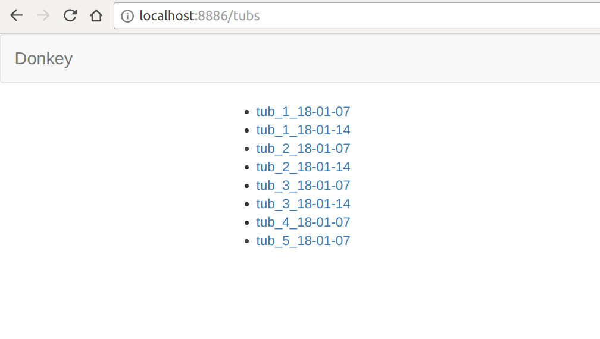{width="4.807292213473316in" height="2.717165354330709in"}
You can clean-up your tub directories. Please make a backup of your data before you start
to clean it up.
On the mac if the training complains
rm \~/projects/d2t/data/.DS_Store
If it complains about docopt, install it again. And I did not change anything
from the previous day. Go figure...
(env) jack@lnxmbp01:\~/projects/d2\$ pip list
(env) jack@lnxmbp01:\~/projects/d2\$ pip install docopt
See the models here
\~/projects/d3
ls models
[ucsd_12oct17.h5]{.mark}
Place Autopilot into RPI
rsync -a --progress \~/projects/d3/models/ jetson@ucsdrobocar00:\~/projects/d3/models/
At JTN
ls models
Ucsd_12oct17.h5
On the JTN
Run AutoPilot at the RPI
python manage.py drive --model=./models/ucsd_12oct17.h5
...
Using TensorFlow backend.
loading config file: /home/pi/d2/config.py
config loaded
PiCamera loaded.. .warming camera
Starting vehicle...
/home/pi/env/lib/python3.4/site-packages/picamera/encoders.py:544: PiCameraResolutionRounded: frame size rounded up from 160x120 to 160x128
width, height, fwidth, fheight)))
END of DonkeyCar AI Framework Instructions
Remote Desktop Installation
Remote Access to the SBC Graphical User Interface (GUI)
Lets install a remote desktop server on the SBC and a client on your computer
We will be using [NoMachine]{.underline}
[Here is a link to the instructions]{.underline} to install NOMACHINE on a Single Board Computers base
Backup of the uSD Card
Once you finished the configuration of your SBC, why not making another backup of the uSD card
(or first one if you have not done it yet)
It can save you lots of time during a recovery process. In case of a crash, you will only need to
restore the image vs. install all over again.
Backup the uSD card following these steps in a Linux machine
Eject the uSD card from your SBC, plug it into a linux PC using a uSD adapter
sudo fdisk -l
Disk /dev/sda: 59.6 GiB, 64021856256 bytes, 125042688 sectors
Units: sectors of 1 * 512 = 512 bytes
Sector size (logical/physical): 512 bytes / 512 bytes
I/O size (minimum/optimal): 512 bytes / 512 bytes
Disklabel type: gpt
Disk identifier: D048AD43-24FD-4DED-B06E-7BB8ED98158C
Device Start End Sectors Size Type
/dev/sda1 24576 125042654 125018079 59.6G Linux filesystem
/dev/sda2 2048 2303 256 128K Linux filesystem
/dev/sda3 4096 4991 896 448K Linux filesystem
/dev/sda4 6144 7295 1152 576K Linux filesystem
/dev/sda5 8192 8319 128 64K Linux filesystem
/dev/sda6 10240 10623 384 192K Linux filesystem
/dev/sda7 12288 13439 1152 576K Linux filesystem
/dev/sda8 14336 14463 128 64K Linux filesystem
/dev/sda9 16384 17663 1280 640K Linux filesystem
/dev/sda10 18432 19327 896 448K Linux filesystem
/dev/sda11 20480 20735 256 128K Linux filesystem
/dev/sda12 22528 22687 160 80K Linux filesystem
On my case, the 64G uSD was mounted on /dev/sda
example on the command line for making an image of the uSD card mounted
on a Linux machines as /dev/sda
sudo dd bs=4M if=/dev/sda of=ucsd_robocar_image_25sep19.img status=progress
Lets compress the image using Zip
zip ucsd_robocar_image_25sep19.zip ucsd_robocar_image_25sep19.img
Example using MacOS
diskutil list
/dev/disk6 (external, physical):
: TYPE NAME SIZE IDENTIFIER
0: GUID_partition_scheme *128.0 GB disk6
1: Linux Filesystem 127.6 GB disk6s1
2: Linux Filesystem 67.1 MB disk6s2
3: Linux Filesystem 67.1 MB disk6s3
4: Linux Filesystem 458.8 KB disk6s4
5: Linux Filesystem 458.8 KB disk6s5
6: Linux Filesystem 66.1 MB disk6s6
7: Linux Filesystem 524.3 KB disk6s7
8: Linux Filesystem 262.1 KB disk6s8
9: Linux Filesystem 262.1 KB disk6s9
10: Linux Filesystem 104.9 MB disk6s10
11: Linux Filesystem 134.2 MB disk6s11
sudo dd if=/dev/disk6 of=ucsdrobocar-xxx-yy-v1.0.img
Alternatively you can use MS Windows, use a software called Win32. [Search the web]{.underline}
[for instructions on using Win32]{.underline}
"
Using Windows
Once you open Win32 Disk Imager, use the blue folder icon to choose the location and the name of the backup you want to take, and then choose the drive letter for your SD card. Click on the Read button. The card will then be backed up to your PC.Mar 18, 2015
[Backing up and Restoring your Raspberry Pi\'s SD Card-- The ...]{.underline}
"
If needed, we have an JTN uSD Card Image Ready for Plug and Play
If you run out of time trying to make the compilation and build OpenCV, and install the Donkey AI
framework, here is a link for a 64G Bytes uSDcard that is ready to go. [Get recovery]{.underline} [image here]{.underline}. []{.mark}
The recovery image already has all the software installed.
Connect a uUSB cable between the PC and the JTN, or connect the JTN to the access point
using a network cable.
Boot the JTN, wait 1\~2 minutes for the software to finish loading
You can ssh to the JTN
ssh jetson@192.168.55.1
or
ssh jetson@ucsdrobocar-xxx-yy.local
enter password
jetsonucsd
You need to change the host name and change the default password
Connect the JTN to a WiFi network
see steps earlier in this document
ex:
sudo nmcli device wifi connect UCSDRoboCar5GHz password UCSDrobocars2018
shutdown the JTN
sudo shutdown now
If you are using the uUSB cable, remove it from the JTN
Power on the JTN with the provided 5V power supply
Wait 1\~2 minutes for the JTN to complete the boot process
Then use SSH to connect to the JTN
ROS with Docker
[Here is the link for getting your robot set up with ROS using our docker images]{.underline}
Supporting material
How to show what Linux we have installed
dmesg | head -1
How to show the distribution we are running
lsb_release -a
This session is in-process, just a placeholder for now
Jetson Nano ROS based on NVIDIA
[https://github.com/dusty-nv/jetbot_ros]{.underline}
Here is what I changed on myconfig.py
CAMERA_TYPE = \"WEBCAM\" (PICAM|WEBCAM|CVCAM|CSIC|V4L|MOCK)
PCA9685_I2C_BUSNUM = 1 None will auto detect, which is fine on the pi. But other platforms should specify the bus number.
STEERING_CHANNEL = 1 channel on the 9685 pwm board 0-15
STEERING_LEFT_PWM = 290 pwm value for full left steering
STEERING_RIGHT_PWM = 490 pwm value for full right steering
THROTTLE_CHANNEL = 2 channel on the 9685 pwm board 0-15
THROTTLE_FORWARD_PWM = 490 pwm value for max forward throttle
THROTTLE_STOPPED_PWM = 380 pwm value for no movement
THROTTLE_REVERSE_PWM = 300 pwm value for max reverse throttle
USE_JOYSTICK_AS_DEFAULT = True when starting the manage.py, when True, will not require a --js option to use the joystick
CONTROLLER_TYPE=\'F710\' (ps3|ps4|xbox|nimbus|wiiu|F710)
JOYSTICK_DEADZONE = 0.01 when non zero, this is the smallest throttle before recording triggered.
--
--
To use TensorflowRT on the JetsonNano
http://docs.donkeycar.com/guide/robot_sbc/tensorrt_jetson_nano/
Updating the Donkey AI framework and or using the master release fork
"
Tawn 2:47 PM
3.1.0 released now. TensorRT support on Nano! TFlite support (w TF 2.0+). Better support for cropping across more tools. Please update like:
cd projects/donkeycar
git checkout master
git pull
pip install -e .[pi] or .[nano] or .[pc] depending where you are installing it
cd \~/mycar
donkey update
Important Note: Your old models will not work with the new code. We\'ve changed how cropping and normalization work to support TensorRT/TFLite. So please, RE-TRAIN your models after updating to\ \ docs to help get you started w TensorRT: https://docs.donkeycar.com/guide/robot_sbc/tensorrt_jetson_nano/
Installing TensorRT on Ubuntu18.04
After installing Tensorflow on your virtual environment
ex: conda install tensorflow-gpu==1.13.1
Testing the Tensorflow Install
python
Enter the following txt, you can cut and paste
Python
import tensorflow as tf
hello = tf.constant(\'Hello, TensorFlow!\')
sess = tf.Session()
print(sess.run(hello))
[https://developer.nvidia.com/nvidia-tensorrt-5x-download]{.underline}
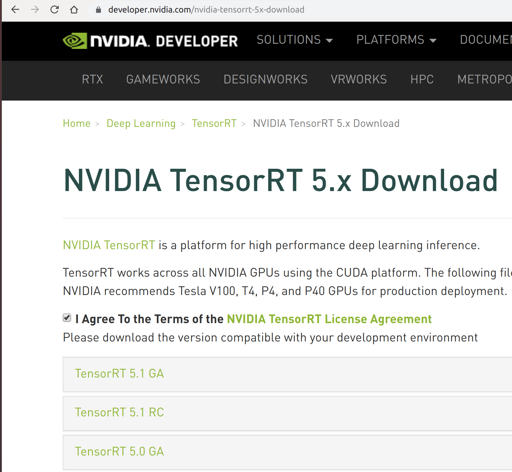{width="1.9798939195100613in" height="1.828125546806649in"}
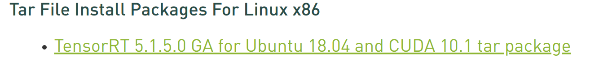{width="3.5781255468066493in" height="0.36722878390201225in"}
Open a terminal window and navigate to the directory where you saved the file
Now let's expand the file
{width="6.875in" height="0.4444444444444444in"}
Note that the file above expects to work with cudnn7.5
The Cuda install will need to match that version, cudnn7.5
e.g. \~/projects/TensorRT-5.1.5.0/
cd \~/projects/TensorRT-5.1.5.0
tar xzvf TensorRT-5.1.5.0.Ubuntu-18.04.2.x86_64-gnu.cuda-10.1.[cudnn7.5]{.mark}.tar.gz
export LD_LIBRARY_PATH=\$LD_LIBRARY_PATH:\~/projects/TensorRT-5.1.5.0/lib
Activate the virtual environment you want TensorflowRT installed
e.g. source \~/projects/env/bin/activate
cd python
If using python 3.6
pip install tensorrt-5.1.5.0-cp36-none-linux_x86_64.whl
or if using python3.7
pip install tensorrt-5.1.5.0-cp37-none-linux_x86_64.whl
cd ..
cd uff
pip install uff-0.6.3-py2.py3-none-any.whl
which convert-to-uff
/home/jack/projects/env/bin/convert-to-uff
or
which convert-to-uff
/home/jack/miniconda3/envs/donkey/bin/convert-to-uff
cd ..
cd graphsurgeon
pip install graphsurgeon-0.4.1-py2.py3-none-any.whl
cd..
apt-get install tree
tree -d
dpkg -l | grep nvinfer
Testing TensorRT
python
import tensorrt as trt
exit()
Example after training a model
You end up with a Linear.h5 in the models folder
python manage.py train --model=./models/Linear.h5 --tub=./data/tub_1_19-06-29,...
Freeze model using freeze_model.py in donkeycar/scripts
The frozen model is stored as protocol buffers.
This command also exports some metadata about the model which is saved in ./models/Linear.metadata
python freeze_model.py --model=./models/Linear.h5 --output=./models/Linear.pb
Convert the frozen model to UFF. The command below creates a file ./models/Linear.uff
convert-to-uff ./models/Linear.pb
cd \~/projects/d3_trax_rally
python \~/projects/donkeycar/scripts/freeze_model.py --model=./models/24aug19_ucsd_booker_linear_1_320_240.h5 --output=./models/24aug19_ucsd_booker_linear_1_320_240.pb
convert-to-uff ./models/24aug19_ucsd_booker_linear_1_320_240.pb
For the RPI
If you would like to try tflite support, you will need a newer version of Tensorflow on the pi. You can download and install this version:
wget https://tawn-train.s3.amazonaws.com/tf/tensorflow-2.0.0a0-cp35-cp35m-linux_armv7l.whl
pip install tensorflow-2.0.0a0-cp35-cp35m-linux_armv7l.whl
Your host PC can stay at TF 1.13.1
to train a TensorRT model, during training add the arg
--type=tensorrt_linear
And for TFlite support add the arg
--type=tflite_linear
Also use this flag when running your model on the car. (edited)
"
PS3 Controller Modes
This is similar for the Logitech wireless controllers
The default mode will be that [User]{.mark} is in Control. That is, the user controls Steering and Throttle.
To switch to [Local Angle]{.mark} (software controls the Steering and uses the Throttle), you need to press the \<Select> button in the Joystick.
If you give Throttle the Robocar should drive around semi-autonomously.
After few laps that you see that your model is good,
[Please hold your robot with the wheels out of the floor]{.mark}
you can press the \<Start> button [and immediately press the \<left_DOWN_arrow> button a few times to decrease the Throttle as needed.]{.mark} This is important so you slow down the Robocar for a constant Throttle.
Press the \<left_UP_arrow> to give it more Throttle as needed.
Pressing \<[X>]{.mark} will stop the robocar and go back to User mode (user is in control)
You can change the driving modes by pressing the \<Select> button. You should be able to see a message on your computer terminal that is SSH connected to the RoboCar RPI.
The Local & Angle mode (fully autonomous) is to be used after you see that you can do few laps with local angle
Hit the Select button to toggle between three modes - User, Local Angle, and Local Throttle & Angle.
-
User - User controls both steering and throttle with joystick
-
Local Angle - Ai controls steering. User controls the throttle.
-
Local Throttle & Angle - Ai controls both steering and throttle
When the car is in Local Angle mode, the NN will steer. You must provide throttle...
Ideally you will have \~ 60 laps
If you don't have a good working Auto-Pilot, get more data in 10 laps increments.
In summary, you may want to start with 60 laps and then do 10\~20 laps more to see if the model gets better.
I would not worry much about a few bad spots when collecting data. Drive the car back to the track,
then press Green_Triangle to delete the last 5s of data.
Keep driving, you will develop good skills, you will get good data and better models. If you leave the track, just drive the RoboCar back to track. It may even learn how to get back to track.
If you keep the data from the same track (ex: UCSD Track) in the d2t/data directory, as you add more files to it (e.g., tub_[5]{.mark}_17-10-13) it will help your model. At the same time it will take more time to train since your model will read all the data sets in the directory. You can use the transfer model to add new data to a current model.
Incremental training using a previous model
python train.py --tub \~/projects/d2t/data/NAME_OF_NEW_TUBE_DATA --transfer=models/NAME_OF_PREVIOUS_MODEL.h5 --model=models/NAME_OF_NEW_MODEL.h5
Some Advanced Tools
The visualization tool is to be used on your PC. Please even if you can, please do not use the GPU Cluster Resources for this.
https://docs.google.com/presentation/d/1oOF9qHh6qPwF-ocOwGRzmLIRXcIcguDFwa7x9EicCo8/editslide=id.g629a9e24fa_0_1149
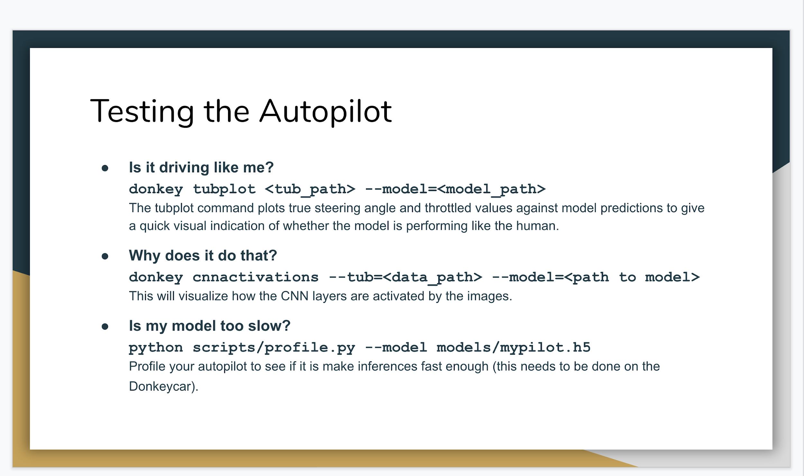{width="6.875in" height="4.083333333333333in"}
Visualizing the model driving the car vs. human driver
Install OpenCV
sudo apt-get install python-opencv
pip3 install opencv-python
donkey makemovie --tub=data\tub_file --model=models\model_name.h5 --limit=100 --salient --scale=2
example
donkey makemovie --tub=data/tub_9_19-01-19 --model=models/19jan19_oakland_5.h5 --start 1 --end 1000 --salient --scale=2
tub_3_20-03-07
07mar20_circuit_320x180_3.h5
donkey makemovie --tub=data/tub_3_20-03-07 --model=models/07mar20_circuit_320x180_3.h5 --type=linear --start 1 --end 1000 --salient --scale=2
If you\'re on the same wired local network, ssh -X works, but you should be aware that the graphics are being rendered on your local X server in such a case, so if you launch an OpenGL game for example, it\'ll use your local virtual graphics hardware, which means your local *CPU* in most cases. Cuda, however, will be done on the nano.
To launch a program remotely from a linux computer:
ssh -X some_user@test-jetson -C gedit
ssh -X ubuntu@tegra-ubuntu nautilus
Where `gedit` is the program you wish to run. You can omit -C get straight to a ssh prompt with X support. Any graphical applications you launch will pop up on your screen automatically.
Please note that X does not need to be running on the Nano, so if you want to save a whole bunch of memory while working remotely you can run `sudo systemctl isolate multi-user.target` to temporarily shut down the graphical environment on the Nano itself.
To remotely access from windows, here are instructions on how to set up an X server on windows and connect it to Putty, but please note those instructions have an old download link. A new one is here.
Raspberry PI (RPI or PI) Configuration
04Nov19 - Added a link to a plug and play image
03Nov19 - Updated instruction for Tensorflow 2.0
28Aug19 - updated the instructions to include Raspberry PI 4B
08Aug19 - Since we are using the Nvidia Jetson Nano, I am no longer maintaining the RPI
instructions. If you got to this point and is using Raspberry PIs, please check the
Donkey Docs for the latest updates... [http://docs.donkeycar.com]{.underline}
In general if you are using a Linux distribution like Ubuntu in this course it will make
your life is much easier. Initially, you will need access to a Linux to modify some files from
a uSD card. You can ask a colleague, TA, or course instructor for help.
Moreover, if you use Linux it will be another entry into your resume. Give it a try. You can
make a dual boot in your computer or have a virtual machine, [VirtualBox is free]{.underline}.
-------------
We will start with an Operating System Image called Raspbian (Raspberry Debian ...)
You can use your favorite disk image writer to have the disk image written to the uSD.
The uSD card to be used on the RPI. Note, this is not a regular file copy operation.
You can use Etcher [https://etcher.io/]{.underline}
From your PC let\'s prepare the Raspberry PI (RPI) uSD card
Make sure your computer can access the Internet
If you are using one of our WiFi Access Points in one of the labs or at one of the tracks, the first PC
that connects to the WiFi Access point will need to accept the UCSD Wireless Visitor Agreement,
just like when connecting directly to UCSD's Visitor WiFi.
Get the Raspbian Lite uSD image [here.]{.underline}
Etcher can use Zipped files, you don't need to Unzip the image file. If you are using Linux command
lines to write the disk image to a uSD card you may need to extract the file first.
This OS (disk) image is based on the Raspbian headless (no GUI). We will use command line on
the RPI, to get to the RPI we will be using SSH (secure shell). Don't worry, these are just command
line names. Mastering these will be good skills to have.
If you don't know about SSH and the command line in Linux, you will learn enough in this course.
Let\'s write the disk image into the uSD Card
Connect the provided uSD adapter into your PC
Insert the provided uSD card (64 Gbytes) into the uSD adapter
Install and run Etcher [https://etcher.io/]{.underline}
Start Etcher, chose the Zipped file with the Disk Image you downloaded,
pay attention when choosing the drive with the uSD card on it (e.g., 64 Gbytes)
write the image to uSD card.
If you are using Linux, after you finish writing the disk image to the uSD card
you should see two partitions in your computer file system
[boot and rootfs]{.mark}
[If you are not seeing these partitions in your computer, try removing the uSD card from]{.mark}
[your computer then insert it again. If that does not work, try using a]{.mark}
[computer running Linux.]{.mark}
Prepare the network configuration file.
We will create a text file with the WiFi configurations.
You can use the nano or gedit on Linux (e.g.,Ubuntu).
On other OSes make sure the file you are creating is a plain text file.
Don't use MS Word or other Apps that may save the file with different file formats
and hidden text format characters.
Note: If you are using a MAC with the SD to uSD adapter, MAC OS may not be able to
write the Donkey Image disk "boot". Use the USB uSD card adapter provider for each
Team.
At the root partition of the uSD card, will name the file as wpa_supplicant.conf
Using Linux or a Mac terminal, the command line you will use is
sudo nano wpa_supplicant.conf
Navigate to the drive that you created the RPI image.
Look for a boot partition
Edit and save the file with this name wpa_supplicant.conf
Open a terminal ex:
cd /media/UserID/boot
ex:
cd /media/jack/boot
sudo nano wpa_supplicant.conf
or
sudo nano /media/UserID/boot/wpa_supplicant.conf
You will need to enter your password
ex: nano /media/jack/boot/wpa_supplicant.conf
on a mac
cd /Volumes/boot
nano wpa_supplicant.conf
Here is the content of wpa_supplicant.conf
You can copy and paste it
ctrl_interface=DIR=/var/run/wpa_supplicant GROUP=netdev
update_config=1
country=US
network={
ssid=\"SD-DIYRoboCar5GHz\"
key_mgmt=WPA-PSK
psk=\"SDrobocars2017\"
priority=100
id_str=\"SD-DIYRoboCars5GHz\"
}
network={
ssid=\"UCSDRoboCar5GHz\"
key_mgmt=WPA-PSK
psk=\"UCSDrobocars2018\"
priority=90
id_str=\"ucsdrobocar5G\"
}
network={
ssid=\"SD-DIYRoboCar\"
key_mgmt=WPA-PSK
psk=\"SDrobocars2017\"
priority=80
id_str=\"SD-DIYRoboCars2.4GHz\"
}
network={
ssid=\"UCSDRoboCar\"
key_mgmt=WPA-PSK
psk=\"UCSDrobocars2018\"
priority=70
id_str=\"ucsdrobocar2.4GHz\"
}
[If you are using a PC running Linux to edit the file in a later time,]{.mark}
[place the uSD card into the PC]{.mark}
[sudo nano /media/user_id/rootfs/etc/wpa_supplicant/wpa_supplicant.conf]{.mark}
On first boot, this file will be moved to the path below where it may be edited later
as needed.
To edit current WiFi connections or to add WiFi Connections
You will need to ssh to to RPI and edit the following file
/etc/wpa_supplicant/wpa_supplicant.conf
From a terminal where you SSH to the RPI
sudo nano /etc/wpa_supplicant/wpa_supplicant.conf
[Please change the hostname and the password of your RPI\ so other teams don\'t connect to your RPI by mistake.]{.mark}
[Change the Hostname (HostID)]{.mark}
[Using Linux you will be able to edit two files that are in the following directory]{.mark}
[When using MacOS you may not see ext3/ext4 partitions that Linux (Raspbian) uses]{.mark}
[hostname]{.mark}
[and]{.mark}
[hosts]{.mark}
[Replace raspberrypi with ucsdrobocar-xxx-yy]{.mark}
[The hostnames should follow ucsdrobocar-xxx-yy]{.mark}
[xx= Team number]{.mark}
[For team 07, replace raspberrypi by ucsdrobocar07]{.mark}
[For COMOS]{.mark}
[For team 07, replace raspberrypi by ucsdcosmos11t07]{.mark}
[sudo nano /media/UserID/rootfs/etc/hostname\ sudo nano /media/UserID/rootfs/etc/hosts\ ]{.mark}
[ex:]{.mark}
[sudo nano /media/jack/rootfs/etc/hostname]{.mark}
[sudo nano /media/jack/rootfs/etc/hosts\ ]{.mark}
[When editing from the RPI]{.mark}
[sudo nano /etc/hostname]{.mark}
[sudo nano /etc/hosts]{.mark}
[If you have not changed the RPI host name, you need to make sure that only your RPI is]{.mark}
[connected to the WiFi router until you can change its hostname and password.]{.mark}
[Your computer and the RPI need to be on the same network so you can connect to it.]{.mark}
[Said so, in our case we have 5GHz WiFi too, you should connect your computer to]{.mark}
[the 5GHz Access Point. There is a bridge between]{.mark}
[the 5GHz and 2.4GHz networks in the Access Points we use.]{.mark}
[Therefore you computer will be able to connect to the]{.mark}
[RPI.]{.mark}
[Enable SSH on boot\ Create a text file and name it ssh in the boot partition]{.mark}
[On Linux]{.mark}
[sudo nano /media/UserID/boot/ssh]{.mark}
[ex: sudo nano /media/jack/boot/ssh]{.mark}
[On MacOS]{.mark}
[/Volumes/boot]{.mark}
[You can add some characters into the file to force nano to write it.]{.mark}
[Type any short text such as test]{.mark}
[ex: 123]{.mark}
[Close any terminal that may be using the uSD card]{.mark}
[Use the eject equivalent function in your computer to eject the boot and roofs uSD]{.mark}
[partitions]{.mark}
[Remove the uSD card from your computer, carefully insert it into your RPI]{.mark}
[Power-up your RPI. You can use a uUSB power adapter or plug it into a PC USB port.]{.mark}
[Connecting to your RPI using SSH]{.mark}
[SSH is installed by default on Linux, MacOS, and Windows 10.]{.mark}
[On MS Windows 7 or older you will need to get software/app that supports SSH.]{.mark}
[During the first boot it may take a few minutes for the RPI to be ready.]{.mark}
[Watch for the RPI green LED flashing, it indicates uSD access.]{.mark}
[During the first boot Raspbian extend the file system. It takes more time than the next\ following OS boot.]{.mark}
[To connect to your RPI you will need to run a computer terminal and issue a ssh command]{.mark}
ssh pi@rpiname.local
[ex: ssh pi@ucsdrobocar07.local]{.mark}
[password: raspberry]{.mark}
[If you have changed the hostname of your RPI or you can not see it in the network,]{.mark}
[maybe because you have incorrect WiFi info, coordinate with other teams]{.mark}
[that you are the only one doing the initial configuration while connected to the WiFi or direct]{.mark}
[to the router using a network cable.]{.mark}
[Otherwise you will be connecting to another Team's RPI.]{.mark}
[Connect a network cable to your RPI and the WiFi access point. Boot it...]{.mark}
[Alternatively, remove the uSD card and put it back in your PC. Read on the net about]{.mark}
[Raspbian / Linux (Debian) on changing hostname at]{.mark}
[the OS level at the uSD card on your PC before placing it in RPI.]{.mark}
[Hint]{.mark}
[sudo nano]{.mark}
[/etc/hostname\ /etc/hosts\ ]{.mark}
[Please change the hostname and the password so other]{.mark}
[teams don\'t work on your RPI.]{.mark}
[Again]{.mark}
[If you are having difficulties connecting to you RPI using WiFi. Connect the RPI to the]{.mark}
[router using a network cable (e.g., CAT5).]{.mark}
[We should have at least one network cable in lab.]{.mark}
SSH into the RPI
ssh pi@ucsdrobocar-xxx-yy.local
Lets update the repository content and upgrade the raspbian
(RPI Linux OS based on Debian)
If you did not configure the RPI WiFI correctly it will not connect to
your WiFi Access Point (AP)
If needed
edit the wpa_supplicant.conf file
sudo nano /etc/wpa_supplicant/wpa_supplicant.conf
SSH into the RPI
ssh pi@ucsdrobocar-xxx-yy.local
Check that the date and time is correct at the RPI and instal ntp to auto-update date and time
date
Hint. In the case the clock on the RPI is not updating automatically by getting information
from the Internet, you need to set the date and time manually or updates and install may fail
Here is how you can do it
ex: sudo date -s \'2018-10-04 09:30:00\'
Once you set the country/location, and have an active Internet access,
these should force a clock synchronization on boot/reboot
Initially it may be off because you have not set the time zone yet. e.g. Pacific Time
sudo apt-get update
sudo apt-get install ntp
sudo /etc/init.d/ntp stop
sudo ntpd -q -g\ sudo /etc/init.d/ntp start
Assuming you RPI is connected to the Internet, you can always use
sudo ntpd -q -g
to get the time from a server in the Internet
Reboot to check if the date / times are updating correctly
sudo reboot now
SSH into the RPI
Check that the date and time are correct
date
Be patient, this may take a while depending on how many updates were released
after the uSD card image that you are using
sudo apt-get update
sudo apt-get upgrade
[then reboot the RPI]{.mark}
[sudo reboot now]{.mark}
[Connect to the RPI\ As applicable, once you connect to your RPI run the following command]{.mark}
[sudo raspi-config]{.mark}
[to change the host name and other things.]{.mark}
[On the RPI use this command]{.mark}
[ex: For team 07, use hostname ucsdrobocar07]{.mark}
[Change the password]{.mark}
[sudo raspi-config]{.mark}
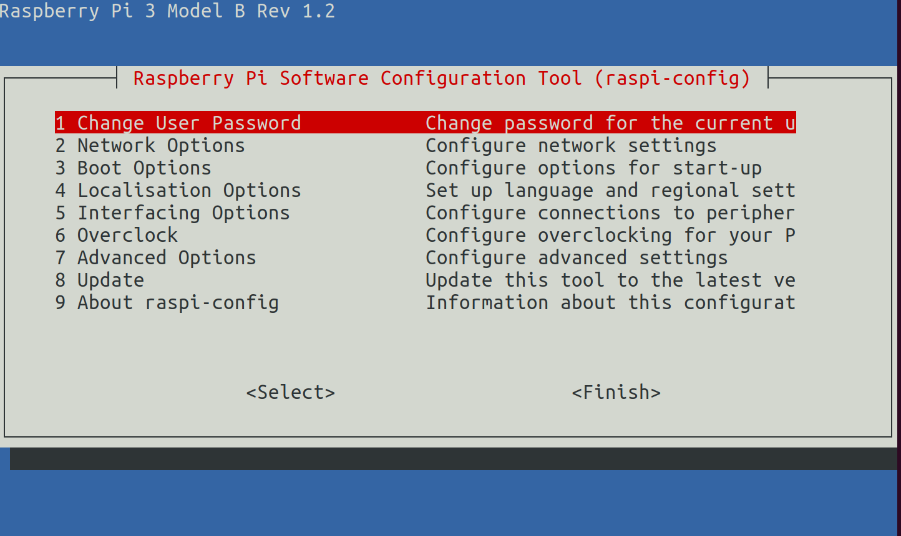{width="6.875in" height="4.097222222222222in"}
User Password, Hostname (if needed), enable camera, enable I2C,
locale-time zone to America/ US Pacific / Los Angeles
WiFi country US, then expand the file system just in case
it was not automatically done at boot.
If changed the host name, your RPI will have the new hostname on
the next boot
sudo reboot now
After you configure your RPI WiFi and Hostname correctly and reboot,
Your RPI should be accessible using SSH from Linux, Mac, Windows
Open a terminal
ssh pi@ucsdrobocar-xxx-yy.local
enter your password
try this just in case you can not connect to the RPI on another WiFi Access point
such as your Phone acting as a hotspot
ssh pi@ucsdrobocar-xxx-yy (without .local)
If you have not done so, change the default password
on the RPI
passwd
To disable downloading translations, to save time,
create a file named 99translations
sudo nano /etc/apt/apt.conf.d/99translations
Place the following line in the 99translations
Acquire::Languages \"none\";
reboot the RPI
sudo reboot now
Lets install some dependencies, libraries, and utilities
sudo apt-get update
This step may take some time, be patient
sudo apt-get install build-essential python3 python3-dev python3-pip python3-virtualenv python3-numpy python3-picamera python3-pandas python3-rpi.gpio i2c-tools avahi-utils joystick libopenjp2-7-dev libtiff5-dev gfortran libatlas-base-dev libopenblas-dev libhdf5-serial-dev git ntp
And install these to have the dependencies for OpenCV
sudo apt-get install libilmbase-dev libopenexr-dev libgstreamer1.0-dev libjasper-dev libwebp-dev libatlas-base-dev libavcodec-dev libavformat-dev libswscale-dev libqtgui4 libqt4-test
Installing OpenCV
sudo apt install python3-opencv
reboot the RPI
sudo reboot now
In case you want to use the (PCA9685) PWM controller from outside a virtual environment
sudo apt-get install python3-pip
pip3 install Adafruit_PCA9685
and this if the Donkey framework complains about the RPI camera
pip install \"picamera[array]\"
Lets set a virtual environment and name it donkey
We will create virtual environments to enable using different software library configurations without\ having to install them at the root and user level (higher level)
If you have not done so, lets create a directory to store our projects and one subdirectory
to store virtual environments
cd \~
mkdir projects
cd projects
mkdir envs
cd envs
pip3 install virtualenv
python3 -m virtualenv -p python3 \~/projects/envs/[donkey]{.mark} --system-site-packages
this line will activate the virtual environment called donkey every time the
user pi logs in a terminal
echo \"source \~/projects/envs/donkey/bin/activate\" >> \~/.bashrc
source \~/.bashrc
When a virtual environment is active, you should see (name_of_virtual_enviroment)
in front of the terminal prompt
ex:
(donkey) pi@ucsdrobocar-xxx-yy:\~\$
Testing to see if OpenCV is installed in the virtual env
python
import cv2
cv2.__version__
exit ()
[GCC 8.2.0] on linux
Type \"help\", \"copyright\", \"credits\" or \"license\" for more information.
>>> import cv2
>>> cv2.__version__
\'3.2.0\'
>>> exit ()
Lets install the Donkeycar AI framework
if not done, create a directory called projects
mkdir projects
cd projects
Get the latest donkeycar from Github.
git clone https://github.com/autorope/donkeycar
cd donkeycar
git checkout master
This step may take some time, be patient
pip install -e .[pi]
Lets install Tensorflow
single board computer (SBC) ...
cd \~/projects
Type the command below all in one line
wget https://github.com/PINTO0309/Tensorflow-bin/raw/master/tensorflow-2.0.0-cp37-cp37m-linux_armv7l.whl
Lets install tensorflow. This step may take some time to install. You are using a low power
pip install --upgrade tensorflow-2.0.0-cp37-cp37m-linux_armv7l.whl
Quick test of the Tensorflow install
python -c \"import tensorflow\"
If no errors, you should be good.
If you want to know what is running in your RPI while it is busy,
open another terminal, or tab in the same terminal, SSH into the RPI
then run the command top
top
ex: you can see that the CPU(s) is/are busy
wait for the install to finish...
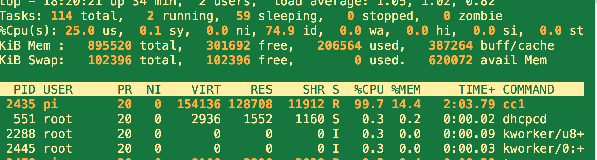{width="6.875in" height="1.8611111111111112in"}
Try the Tensorflow install again few times if it fails
If needed, upgrade pip
pip install --upgrade pip
Let's create a car on the path \~/projects/d3
donkey createcar --path \~/projects/d3
Your RPI directory should look like this
list the content of a directory with ls
d3 donkeycar envs tensorflow-2.0.0-cp37-cp37m-linux_armv7l.whl
cd \~/projects/d3
ls
The output should be something similar to
config.py data logs manage.py models myconfig.py train.py
Research what you have to do so when you log into your RPI you are working from
the car directory like \~/projects/d3 vs. having to issue the command cd /projects/d3
all the time after you log into the RPI.
What happens when the RPI boots in relation to the file .bashrc ( \~/.bashrc) ?
To enable the use of a WebCam (USB cameras)
sudo apt-get install python3-dev python3-numpy libsdl-dev libsdl-image1.2-dev \
libsdl-mixer1.2-dev libsdl-ttf2.0-dev libsmpeg-dev libportmidi-dev \
libavformat-dev libswscale-dev libjpeg-dev libfreetype6-dev
pip install pygame
[Here is a link]{.underline} to a plug an play image with necessary software installed
If you are at UCSD connected to one of the classes WiFi access points you can
connect to the RPI with
ssh pi@ucsdrobocar-xxx-yy.local
raspberryucsd
Then make sure to change the hostname and password. See instructions in this document.
Installing the Pulse Width Modulation (PWM)
https://docs.google.com/document/d/11nu6_ReReoIxA1KVq-sCy7Tczbk6io0izcItucrw7hI/edit
 {width="5.15625in"
height="5.447916666666667in"}
{width="5.15625in"
height="5.447916666666667in"}
For reference, below is the Raspberry Pi Pinout.
You will notice we connect to +3.3v, the two I2C pins (SDA and SCL) and ground:
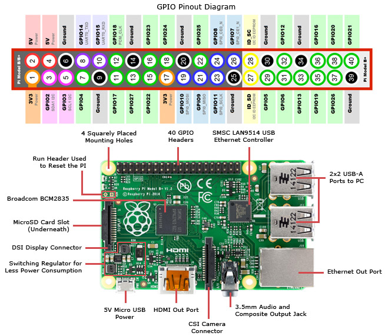{width="6.8125in" height="5.947916666666667in"}
After connecting the I2C PWM Controller lets test the communication
Power the RPI, you can use the USB power adapter for this test
sudo i2cdetect -y 1
The output is something like
0 1 2 3 4 5 6 7 8 9 a b c d e f
00: -- -- -- -- -- -- -- -- -- -- -- -- --
10: -- -- -- -- -- -- -- -- -- -- -- -- -- -- -- --
20: -- -- -- -- -- -- -- -- -- -- -- -- -- -- -- --
30: -- -- -- -- -- -- -- -- -- -- -- -- -- -- -- --
40: [40]{.mark} -- -- -- -- -- -- -- -- -- -- -- -- -- -- --
50: -- -- -- -- -- -- -- -- -- -- -- -- -- -- -- --
60: -- -- -- -- -- -- -- -- -- -- -- -- -- -- -- --
70: [70]{.mark} -- -- -- -- -- -- --
(dk)pi@jackrpi02:\~ \$
Look for a similar result above. 40 ...70 in this case is what we are looking for.
Now that the RPI3 is talking to the I2C PWM board we can calibrate the Steering and Throttle.
Lets get the EMO circuit working too in case you need to use it.
For the UCSD RoboCars, an Emergency Stop Circuit is required.
COSMOS RoboCars are not required to have the EMO
After you charge your Lithium Polymer (LiPo) battery(ries) - [some info here]{.underline}
Connect the battery(ries) and batteries monitor/alarm
[Please do not use the batteries without the batteries monitor/alarms]{.mark}
If you discharge a LiPO batteries below a threshold lets say 3.2 volts. It may not recover to be charged. That is why it is critical that you use the LiPo batteries alarm all the time.
Connecting the Emergency Stop Circuit and Batteries into the Robot
For this part of your robot, you will have to do some hacking. That is part of the class.
The instructor will discuss the principle of the circuit and how to implement it with the component in your robot kit.
Long story short, the PWM Controller we use has a disable pin. It the correct logic is applied to it for example Logic 1 or 0 (3.3V or 0V) it will disable the PWM signals and the UCSDRoboCar will stop.
Think why one needs a separate EMO circuit vs. relying on the software, operating system and computer communicating with the PWM controller that then send PWM pulses to the actuators (steering servo and driving DC motor by the electronics speed controller)
First search on the web and read the datasheet of the emergency stop switch (EMO) components provided with the robot kit and discuss them with your teammates how the EMO will work. You got two main components to build the a WireLess EMO switch:
c) A Wireless Relay with wireless remote controls
d) A Red/Blue high power LED. This is to help the user know if the car is disable (Blue) or Enabled (Red).
-
What is the disable pin the PWM controller?
-
Does it disable on logic 1 or 0?
-
How to wire the wireless relay to provide the logic you need to disable PWM controller? (1 or 0)
-
How to connect the LEDs (Blue and Red) to indicate (RED - hot/enabled), (BLUE - power is on / disabled).
-
Note: The power to the PWM controller, that powers the LEDs, comes from ESC (Electronics Speed Controller). Therefore, you have to connect the robot batteries to the ESC and the ESC to the PWM controller. We are using channel 2 for the ESC. Channel 1 for the Steering.
After you see that the EMO is working, i.e. wireless remote control disable the PWM, and the LEDs light up as planned, then you need to document your work. Please use a schematic software such as Fritzing ([http://fritzing.org/home/]{.underline}) to document your electrical schematic.
It may seem we did the opposite way; document after your build. In our case, you learned by looking at components information, thinking about the logic, and experimenting. Since you are an engineer you need to document even it if was a hack...
Working in a company you may do fast prototyping first then document. On larger projects you make schematics, diagrams, drawings, work instructions, then build it. Keep that in mind!
Calibration of the Throttle and Steering
Before you develop code or you can use a someone\'s code to control a robot, we need to calibrate the actuator/mechanism to find out its range of motion compared to the control / command a computer will send to the controller of the actuator/mechanism.
The calibration is car specific. If you use the same platform, the numbers should be really close. Otherwise, you will need to calibrate your car.
[We are following the standard from RC CAR world, Channel 1 for Steering, Channel 2 for Throttle]{.mark}
Note:The default DonkeyCar build uses Channels 0 and 1
The UCSDRoboCar has at least two actuators. A steering servo and the DC motor connected to an Electronics Speed Controller (ESC). These are controlled by PWM (Pulse Width Modulation).
We use PWM Controller to generate the PWM signals, a device similar to the one in the picture below
{width="4.015625546806649in"
height="2.804853455818023in"}
Shutdown the RPI if it is on type this command
sudo shutdown -h now
Connect the Steering Servo to the Channel 1
Connect the Throttle (ESC) to Channel 2
Observe the orientation of the 3 wires connector coming from the Steering Servo and ESC. Look for a the black or brown wire, that is the GND (-).
[MAKE SURE THE ROBOT IS ON THE RC CAR STAND]{.mark}
Follow the safety guidelines provided in person in the class. If something does not sound right, don't do it. Safety first.
Power on the RPI
Power the Electronic Speed Controller (ESC)
Enable the robot using your EMO wireless control - The safety LED should be RED
Lets run a Python command to calibrate Steering and Throttle
The donkey commands need to be run from the directory you created for your car, i.e., [d2]{.mark}
If you have not done so, SSH into the RPI
If needed, change directory to d2t
cd d2t
The output
(env) pi@jackrpi10:\~/projects/d3 \$
donkey calibrate [--channel 1]{.mark}
Try some values around 400 to center the steering
Enter a PWM setting to test(100-600)370
Enter a PWM setting to test(100-600)365
Enter a PWM setting to test(100-600)360
[In my case]{.mark}, 365 seems to center the steering
Take note of the left max, right max,
ex:
365 - Center
[285]{.mark} - Steering left max
[440]{.mark} - Steering right max
Note: When donkey calibrate times-out after few tries, just run it again
donkey calibrate [--channel 1]{.mark}
You can interrupt the calibration by typing CTRL-C
[MAKE SURE THE ROBOT IS ON THE RC CAR STAND]{.mark}
Let me say this one more time
[MAKE SURE THE ROBOT IS ON THE RC CAR STAND]{.mark}
Now to calibrate the Throttle Electronic Speed Controller ESC (THROTTLE)
Following the standard for R/C cars. Throttle goes on channel [2]{.mark}
donkey calibrate [--channel 2]{.mark}
Enter a PWM setting to test(100-600)[370 (neutral)]{.mark}
Enter a PWM setting to test(100-600)380
Enter a PWM setting to test(100-600)390
370 when power up the ESC seems to be the middle point (neutral),
lets use 370 also to be compatible with Donkey.
Neutral when power the ESC - [370]{.mark}
Then go in increments of 10\~20 until you can no longer hear increase on the speed
of the car. Don't worry much about the max speed since we won't drive that fast autonomously
and during training the speed will be limited.
Max speed forward - [460]{.mark}
Reverse on RC cars is a little tricky because the ESC needs to receive
a reverse pulse, zero pulse, and again reverse pulse to start to go backwards.
Use the same technique as above set the PWM [setting to your zero throttle (lets say 370)]{.mark}.
[Enter the reverse value]{.mark}, then the [zero throttle (e.g., 370)]{.mark} value, then the [reverse value again]{.mark}.
Enter values +/- 10 of the reverse value to find a reasonable reverse speed. Remember this reverse PWM value.
(dk)pi@jackrpi02:\~/projects/d3 \$
donkey calibrate [--channel 2]{.mark}
...
Enter a PWM setting to test(100-600)360
Enter a PWM setting to test(100-600)[370]{.mark}
Enter a PWM setting to test(100-600)360
Enter a PWM setting to test(100-600)350
Enter a PWM setting to test(100-600)340
Enter a PWM setting to test(100-600)330
Enter a PWM setting to test(100-600)320
Enter a PWM setting to test(100-600)310
Enter a PWM setting to test(100-600)300
Enter a PWM setting to test(100-600)290
---
Neutral when power the ESC - [370]{.mark}
Max speed forward - [460]{.mark}
Max speed backwards - [280]{.mark}
and from the steering calibration
Center - 365
Steering left max - [285]{.mark}
Steering right max - [440]{.mark}
---
Now let\'s write these values into the car configuration file
(dk)pi@jackrpi02:\~/projects/d3 \$ ls
config.py data logs manage.py models
Edit the file config.py
(dk)pi@jackrpi02:\~/projects/d3 \$
nano config.py
Change these values according to YOUR [calibration values]{.mark} and [where you have the Steering Servo and ESC]{.mark} connected
...
STEERING
STEERING_CHANNEL = 1
STEERING_LEFT_PWM = [285]{.mark}
STEERING_RIGHT_PWM = [440]{.mark}
THROTTLE
THROTTLE_CHANNEL = [2]{.mark}
THROTTLE_FORWARD_PWM = [460]{.mark}
THROTTLE_STOPPED_PWM = [370]{.mark}
THROTTLE_REVERSE_PWM = [280]{.mark}
Also, if needed change these
JOYSTICK
USE_JOYSTICK_AS_DEFAULT = True
JOYSTICK_MAX_THROTTLE = 0.4
JOYSTICK_STEERING_SCALE = 1.0
AUTO_RECORD_ON_THROTTLE = True
CONTROLLER_TYPE=\'ps3\' (ps3|ps4)
USE_NETWORKED_JS = False
NETWORK_JS_SERVER_IP = \"192.168.0.1\"
LED
HAVE_RGB_LED = True
LED_INVERT = False COMMON ANODE?
board pin number for pwm outputs
LED_PIN_R = 12
LED_PIN_G = 10
LED_PIN_B = 16
LED status color, 0-100
LED_R = 0
LED_G = 0
LED_B = 10
Another example of configuration for the config.py, now with a joystick dead zone for neutral
donkey calibrate --channel 1
donkey calibrate --channel 2
config.py settings
STEERING
STEERING_CHANNEL = 1
STEERING_LEFT_PWM = 275
STEERING_RIGHT_PWM = 440
Center \~ 360
THROTTLE
THROTTLE_CHANNEL = 2
THROTTLE_FORWARD_PWM = 460
THROTTLE_STOPPED_PWM = 370
THROTTLE_REVERSE_PWM = 220
JOYSTICK_MAX_THROTTLE = 0.8
At the UCSD Outdoor Track my car was turning too much. I scaled the steering. May need to increase the number to have sharper turns.
JOYSTICK_STEERING_SCALE = 0.8
Because I have a particular joystick that the Throttle neutral was not centered, I had to
use a deadzone value on config.py
Try first with deadzone= 0
JOYSTICK_DEADZONE = 0.02
LED
HAVE_RGB_LED = True
board pin number for pwm outputs
LED_PIN_R = 8
LED_PIN_G = 10
LED_PIN_B = 12
LED status color, 0-100
LED_R = 0
LED_G = 0
LED_B = 60
Note: If you robot has too much power or not enough power when you start driving it, adjust the max_throttle
JOYSTICK_MAX_THROTTLE = 0.5
This also will be your starting power setting when using the constant throttle autopilot.
Connecting the PS3 Keypad/Joystick
[http://docs.donkeycar.com/parts/controllers/]{.underline}
Bluetooth Setup
[https://pythonhosted.org/triangula/sixaxis.html]{.underline}
We need to install some bluetooth software in the RPI
ssh to the RPI
sudo apt-get update
sudo apt-get install bluetooth libbluetooth3 libusb-dev
sudo systemctl enable bluetooth.service
sudo usermod -G bluetooth -a pi
shutdown the RPI
sudo shutdown now
Remove the power from the RPI. Wait \~ 5 s.
Power on the RPI,
Connect your PS3 Controller to the RPI using a mini USB Cable.
SSH to the RPI
Lets download, compile, and install some bluetooth configuration software
wget http://www.pabr.org/sixlinux/sixpair.c
gcc -o sixpair sixpair.c -lusb
sudo ./sixpair
Output should be something similar to this
Current Bluetooth master: b8:27:eb:49:2d:8c
Setting master bd_addr to b8:27:eb:49:2d:8c
Execute the 'bluetoothctl' command
Pay attention to your PS3 controller [mac address]{.mark}
bluetoothctl
the output should be something similar to this
(env) pi@jackrpi10:\~ \$ bluetoothctl
[NEW] Controller B8:27:EB:7A:12:18 jackrpi10 [default]
[NEW] Device [64:D4:BD:03:CD:C9]{.mark} PLAYSTATION(R)3 Controller
If you don't see the PS3 Controller, unplug and plug it in RPI again
Type agent on
[bluetooth]agent on
Agent is already registered
Type default-agent
default-agent
If you don't see the PS3 Controller, unplug and plug it in RPI again
default-agent64:D4:BD:03:CD:C9
[bluetooth]default-agent
Default agent request successful
[NEW] Device 64:D4:BD:03:CD:C9 Sony PLAYSTATION(R)3 Controller
Authorize service
[agent] Authorize service 00001124-0000-1000-8000-00805f9b34fb ([yes]{.mark}/no):
Type yes
Yes
[CHG] Device 64:D4:BD:03:CD:C9 Trusted: yes
[CHG] Device 64:D4:BD:03:CD:C9 UUIDs: 00001124-0000-1000-8000-00805f9b34fb
[NEW] Device [64:D4:BD:03:CD:C9]{.mark} Sony PLAYSTATION(R)3 Controller
Authorize service
Yes
Type trust and the MAC address for the PS3 controller
ex: [bluetooth]trust 64:D4:BD:03:CD:C9
trust THE_MAC_ADDRESS_PS3_CONTROLLER
Changing 64:D4:BD:03:CD:C9 trust succeeded
[CHG] Device 64:D4:BD:03:CD:C9 Trusted: yes
[bluetooth]quit
Agent unregistered
Lets check what input devices are available
ls /dev/input
Output
by-id by-path event0 event1 [js0]{.mark} mice
you should see a [js0]{.mark}
If connected by the USB cable, disconnect the PS3 controller from the RPI.
Lets list the input devices again
ls /dev/input
Output
mice
Now press the \<PS> button at the PS3 controller,
the lights on the front of the controller should flash for a couple of seconds then stop
The LED 1 should then stay one or flash then goes off. Since we are not using a PS3 game
console, the LEDS on the controller showing the connections are not reliable.
Again, we are not connecting the PS3 controller to a PS3 game console...). As long as you see a
js0 listed on your input devices you are good to go. See below.
ls /dev/input
Output
event0 event1 [js0]{.mark} mice
Please keep your PS3 Controller Off when you are not using it. Press and hold the \<PS>
button for \~10s. The LEDs at the controller will flash then go off.
If the PS3 controller connection is intermittent, try
sudo rpi-update
To remove a device, lets say another JoyStick that you don't use anymore
bluetoothctl
paired-devices
remove THE_MAC_ADDRESS
[NEW] Controller B8:27:EB:72:95:A6 rpimine01 [default]
[NEW] Device 00:1E:3D:D8:EA:15 PLAYSTATION(R)3 Controller
[NEW] Device 00:16:FE:74:12:B7 PLAYSTATION(R)3 Controller
[bluetooth]remove 00:1E:3D:D8:EA:15
[DEL] Device 00:1E:3D:D8:EA:15 PLAYSTATION(R)3 Controller
Device has been removed
[bluetooth]
If you are having problems pairing the PS3 controller, please reset it.
There is "small" reset button at the back. Look up at the Internet if you can't find it.
This is another method that worked for me with the the RaspbianBuster (Sep 2019)
[sudo apt-get install bluetooth libbluetooth3 libusb-dev]{.mark}
[sudo systemctl enable bluetooth.service]{.mark}
[sudo bluetoothctl]{.mark}
[agent on]{.mark}
[default-agent]{.mark}
[scan on]{.mark}
Plug the PS3 Controller in the RPI using a Mini USB Cable
Trust when asked
Disconnect the PS3 Controller
Press the PS Button on the Controller. See if it will pair
Now you can go drive you robot to collect data. Make sure to keep the
EMO handy and use when needed!
Also the \<X> on your controller is like an emergency break.
Driving the Robot to Collect data
Remember you are driving at max of x (0.x) Throttle power based on the
config.py that you edited.
To reverse you may have to reverse, stop, reverse. This is a feature of the
ESC using on RC cars to prevent damaging gears when changing from forward to reverse.
On the RPI
cd d2t
(env) pi@jackrpi10:\~/projects/d3 \$
[python manage.py drive]{.mark}
Note: CTRL-C stop the manage.py drive
Output below
---
(env) pi@jackrpi10:\~/projects/d3 \$ python manage.py drive
using donkey v2.5.0t ...
loading config file: /home/pi/d2t/config.py
config loaded
cfg.CAMERA_TYPE PICAM
PiCamera loaded.. .warming camera
Adding part PiCamera.
Adding part PS3JoystickController.
Adding part ThrottleFilter.
Adding part Lambda.
Adding part Lambda.
Adding part Lambda.
Init ESC
Adding part PWMSteering.
Adding part PWMThrottle.
Tub does NOT exist. Creating new tub...
New tub created at: /home/pi/d2t/data/tub_2_18-09-25
Adding part TubWriter.
You can now move your joystick to drive your car.
Starting vehicle...
Opening /dev/input/js0...
Device name: PLAYSTATION(R)3 Controller
/home/pi/env/lib/python3.5/site-packages/picamera/encoders.py:544: PiCameraResolutionRounded: frame size rounded up from 160x120 to 160x128
width, height, fwidth, fheight)))
---
If you get this error trying to drive it is because the PS3 game controller is off
or not connected
Output
/dev/input/js0 is missing
ls
config.py data logs manage.py models sixpair sixpair.c
ls data
tub_1_17-10-13
If you want to wipe clean the data collected
Remove the content of the \~./d2t/data directory. It should be tub_......
You can delete the entire directory then create it again.
(dk)pi@jackrpi02:\~/projects/d3 \$
rm -rf data
mkdir data
Donkey Install Using Linux - Ubuntu
It is highly recommended that you use Ubuntu in this class. Ideally you can make your computer
dual boot to Ubuntu. Look for instructions at the Internet for that. PLEASE backup your computer
first.
Alternatively, you can install a Virtual Machine management software. e.g., VirtualBox.
Then install Ubuntu.
These first instructions wont have GPU support.
Nvidia GPU support documentation is provided later in this document.
Installation of GPU features won't be supported in the class.
You will have access to a GPU Cluster from the UC San Diego Supercomputer Center.
Lets refresh the Ubuntu repositories and installed software
sudo apt-get update
sudo apt-get upgrade
First lets create a directory to store your projects
mkdir projects
cd projects
Install some necessary software and create a virtual environment
sudo apt-get install virtualenv build-essential python3-dev gfortran libhdf5-dev libatlas-base-dev
virtualenv env -p python3
Activate the virtual environment
source env/bin/activate
Look for the [(env)]{.mark} in front of your command line. It is indication that env is active
To deactivate an environment type deactivate from inside the environment
To activate, make sure you are at the projects directory then type source env/bin/activate
To install specific versions of Keras and Tensorflow (non-GPU)
Install Keras
pip install keras==2.2.2
Install tensorflow
pip install tensorflow==1.10.0
As 03Feb19, the latest version of tensorflow is 1.12
Keep the same version of Tensorflow as close as the Tensorflow in the robocar
(Raspberry) as feasible.
pip install tensorflow==1.12
if needed, install keras 2.2.4
pip install keras==2.2.4
Run a short TensorFlow program to test it
Invoke python from your shell as follows:
\$ python
Enter the following short program inside the python interactive shell:
Python
import tensorflow as tf
hello = tf.constant(\'Hello, TensorFlow!\')
sess = tf.Session()
print(sess.run(hello))
Ctr-D gets out of the Python Tensorflow test.
Install Donkey on your Ubuntu Linux Computer
cd projects
If you want to create another virtual environment or env was not created yet
Install some necessary software and create a virtual environment
sudo apt-get install virtualenv build-essential python3-dev gfortran libhdf5-dev libatlas-base-dev
virtualenv env -p python3
Activate the virtual environment
source env/bin/activate
Look for the [(env)]{.mark} in front of your command line. It is indication that env is active
To deactivate an environment type deactivate from inside the environment
To activate, make sure you are at the projects directory then type source env/bin/activate
This is like you did on RPI but I had my car under the \~/projects directory
Lets get the latest Donkey Framework from Tawn Kramer
git clone https://github.com/tawnkramer/donkey\ pip install -e donkey[pc]
Create a car
donkey createcar --path \~/projects/d2t
from here you can transfer data from your RPI,and then train
create a model (autopilot), transfer the model to the RPI, test it.
Using the GPU Cluster to Train the Auto Pilots
27Aug18 - Under development - Please provide feedback
We are following the instruction provide by out IT Team
We will be using the UCSD Supercomputer GPU Cluster. There are few steps that you need to follow. Pay attention to not leave machines running on the cluster because it is a share resource.
You should be able to log with you student credentials.
Pay attention to not use a GPU machine to do work that does not require GPU...
To begin, login to your account using an SSH client. Most students will use their standard email username to sign on
Create Car Project
ssh [YOUR_USER_ID@ieng6.ucsd.edu]{.underline}
prep me148f
We will launch a container (similar to a virtual machine) without GPU. Tensorflow is not installed on it.
Lets launch a machine to enable us to create a robocar using the Donkey Framework
[No GPU]{.mark} to save resources
launch-py3torch.sh
Attempting to create job (\'pod\') with 4 CPU cores, 16 GB RAM, and [0 GPU units]{.mark}.
To keep the car name the same as in the RPI I created a d2t car
source activate /datasets/conda-envs/me148f-conda/
donkey createcar --path projects/[d2t]{.mark}/
The car was created under projects
cd \~/projects/d2t
Lets exit the container you used to create the Car
exit
Lets check that we don't have any container running under our user
kubectl get pods
No resources found.
If there is nothing still running, lets get out of the ieng6 machine
logout
If you see a container still running,
f "kubectl get pods" shows leftover containers still running, you may kill them as follows:
[ee148vzz@ieng6-201]:\~:505\$ [kubectl get pods]{.mark}
NAME READY STATUS RESTARTS AGE
ee148vzz-24313 1/1 Running 0 9m
[ee148vzz@ieng6-201]:\~:506\$ [kubectl delete pod agt-24313]{.mark}
pod \"ee148vzz-24313\" deleted
[ee148vzz@ieng6-201]:\~:507\$ [kubectl get pods]{.mark}
No resources found.
[ee148vzz@ieng6-201]:\~:508\$
If there is no container running, lets get out of the ieng6 machine
logout
Now, let's bring some data in so we can train on it
Use rsync command below in one line
You can rsync direct from the RPI. SSH to the RPI the issue the rsync command to rsync direct to the GPU cluster. Or you can rsync the data to your computer then rsync to the GPU cluster
Example of rsync one particular Tub directory
rsync -avr -e ssh --rsync-path=cluster-rsync tub_1_17-11-18 [YOUR_USER_ID]{.mark}\@ieng6.ucsd.edu:projects/d2/data/
Example of rsync the entire data directory\ Sending data to the UCSD GPU Cluster direct from the RPI\ rsync -avr -e ssh --rsync-path=cluster-rsync \~/projects/d3/data/* [YOUR_USER_ID]{.mark}\@ieng6.ucsd.edu:projects/[d2]{.mark}/data/\ \ or if you have the car created at d2t at the RPI and GPU Cluster\ \ rsync -avr -e ssh --rsync-path=cluster-rsync \~/projects/d3/data/* YOUR_USER_ID@ieng6.ucsd.edu:projects/[d2t]{.mark}/data/
To enable constant rsync and train while you collect data (drive) we need to exchange a key between the two computers we will rsync. e.g., GPU Cluster and RPI, your computer and RPI, your computer and the GPU Cluster
To Enable Continuous Training - And to not have to type password for SSH and RSYNC
At the PC or RPI
Generate the Private and Public Keys
cd \~
sudo apt-get install rsync
ssh-keygen -t rsa
You may see a warning if you already have a key in your system. Just keep or replace it as you
wish. Keep in mind that if you replace the key your previous trust connections will be lost.
Linux Ubuntu
cat .ssh/id_rsa.pub
macos
cat \~/.ssh/id_rsa.pub
Copy the output of the command into a buffer (e.g., Ctrl-C)
You can use two terminals to easy the copy and paste the information
Leave a terminal open with the key you generated
From your PC to the RPI
Try this first. If does not work try the steps below this line
cat \~/.ssh/id_rsa.pub | ssh pi@YOUR_PI_NAME.local \'cat >> .ssh/authorized_keys\'
or
From the PC to the RPI or PC to the Cluster
At the RPI or GPU Cluster
cd \~
mkdir .ssh
If the directory exists, just ignore this error if you see it
> mkdir: cannot create directory '.ssh': File exists
chmod 700 .ssh
chown pi:pi .ssh
nano .ssh/authorized_keys
then copy and paste the information from the host id_rsa.pub you generated earlier at the PC or RPI
I was able to ssh to the RPI without asking for the password
ex: ssh pi@jackrpi05.local
Here is what I have done to ssh and use rsync from my computer to the Cluster
without having to type the user password all the time
for user me148f
SSH to ieng6
ssh me148f@ieng6.ucsd.edu
[me148f@ieng6-201]:\~:44\$ cd \~
[me148f@ieng6-201]:\~:45\$ mkdir .ssh
[me148f@ieng6-201]:\~:46\$ chmod 700 .ssh
[me148f@ieng6-201]:\~:48\$ chown me148f:me148f .ssh
Just ignore the error below
chown: invalid group: \'me148f:me148f\'
[me148f@ieng6-201]:\~:49\$ nano .ssh/authorized_keys
Now copy and paste the Key you created on your computer.
You can use this same process to ssh / rsync from the RPI to the Cluster
without having to type the user password all the time.
Now you should be able to ssh and rsync to the RPI or Cluster without typing the user password
ex: ssh [YOUR_USER_ID@ieng6.ucsd.edu]{.underline}
If you can not ssh to the RPI or Cluster, fix the problem before continue
Constant rsync - sync data while you drive the car
Lets make rsync run periodically
We will be using some Python Code
rsync data continuously to the data directory under where the code was called from
ex: \~/projects/d2t
From the PC to the RPI
At the PC, create a file name continous_data_rsync.py
nano continous_data_rsync.py
import os
import time
while True:
command = \"rsync -aW --progress %s@%s:%s/data/ ./data/ --delete\" %\
(\'pi\', \'jackrpi04.local\', \'\~/projects/d3\')
os.system(command)
time.sleep(5)
call the python code with
python continous_data_rsync.py
From the RPI to the GPU Cluster
Since the GPU cluster can not see your RPI on the network,
we need to RSYNC from the RPI to the GPU Cluster
At the RPI create a file name continous_data_rsync.py
nano continous_data_rsync.py
import os
import time
while True:
command = \"rsync -aW --progress %s@%s:%s/data/ ./data/ --delete\" %\
(\'pi\', \'jackrpi04.local\', \'\~/projects/d3\')
os.system(command)
time.sleep(5)
call the python code with
python continous_data_rsync.py
Continuous Train\ This command fires off the keras training in a mode where it will continuously look for new
data at the end of every epoch.\ \ Usage:\ donkey contrain [--tub=\<data_path>] [--model=\<path to model>] [--transfer=\<path to model>] [--type=\<linear|categorical|rnn|imu|behavior|3d>] [--aug]
example
training for a particular tub
donkey contrain --tub=\~/projects/d2t/data/tub_1_18-08-20 --model=20aug18_just_testing.h5
training for all tub files
donkey contrain --model=24aug18_just_testing.h5
Continuous Training from a PC
Youetter have a GPU for training, if not this will take a long time. It wont work.
If you don't have a NVIDIA GPU on your PC with CUDA
Here what I have done for continuous training using a PC
For continuous training
Read instructions and do the security keys exchange first
After exchanging the security keys to not have to type the password on ssh and RSYNC
Create a file name continous_data_rsync.py
nano continous_data_rsync.py
import os
import time
while True:
command = \"rsync -aW --progress %s@%s:%s/data/ ./data/ --delete\" %\
(\'pi\', \'[jackrpi01]{.mark}.local\', \'\~/projects/d3\')
os.system(command)
time.sleep(10)
To start the continuous RSYNC
python continous_data_rsync.py
Edit the config.py at your computer so the continuous training works
Continuous Training sends models to the PI when there is new model created.
No need to have an RSYNC for models.
nano config.py
pi information
PI_USERNAME = \"pi\"
PI_PASSWD = \"[Your_RPI_PassWord_Here]{.mark}\"
PI_HOSTNAME = \"[jackrpi01.local]{.mark}\"
PI_DONKEY_ROOT = \"[d2t]{.mark}\"
SEND_BEST_MODEL_TO_PI = True
save the config.py
Continuous Training
training for all tub files
python train.py --continuous --model=models/date_modelName.h5
training for a particular tub
python train.py --continuous --tub=\~/projects/d2t_pmm01/data/tub_1_18-08-20 --model=20aug18_just_testing.h5
If set on config.py continuous Training automatically sends the new model to the RPI.
SEND_BEST_MODEL_TO_PI = True
When using the UCSD's GPU Cluster, you will need an rsync for the models
since the GPU Cluster can not see the RPI
When using the GPU Cluster, rsync works from the RPI to the GPU Cluster
rsync models to the RPI continuously from the models directory where the code was called from
Create a file name continous_models_rsync.py
nano continous_models_rsync.py
import os
import time
while True:
command = \"rsync -aW --progress ./models/ %s@%s:%s/models/ --delete\" %\
(\'pi\', \'[jackrpi01.local]{.mark}\', \'\~/projects/d3\')
os.system(command)
time.sleep(30)
To start the continuous RSYNC
python continous_models_rsync.py
Issue the drive command with the model name.
You need a new model name before issuing the command to drive with a mode.
So lets create a blank model file. Use the same name for the model you will create with
continuous training
touch \~/projects/d3/[24nov18_ucsd01.json]{.mark}
Load the model_name.json because it loads faster than model_name.h5
python manage.py drive --model=./models/[24nov18_ucsd01.json]{.mark}
Security Keys Exchange
It can save you some time by allowing you log to the RPI without asking for the password,
same for RSYNC
Dont use this on mission critical computers
At the PC
Generate the Private and Public Keys
Exchange security Keys
cd \~
sudo apt-get install rsync
ssh-keygen -t rsa
ubuntu
cat .ssh/id_rsa.pub
mac
cat \~/.ssh/id_rsa.pub
Copy the output of the command into the buffer (Ctrl-C or Command-C on a Mac)
At the RPI
cd \~
mkdir .ssh
Ignore this message if you get it
> mkdir: cannot create directory '.ssh': File exists
chmod 700 .ssh
chown pi:pi .ssh
nano .ssh/authorized_keys
I was able to ssh to the RPI without asking for the password
ex: ssh pi@jackrpi04.local
Summary of commands after the robot built and software Installed
[http://docs.donkeycar.com/guide/get_driving/]{.underline}
You will need and Access Point (AP) to connect to your RoboCar to be able to SSH to it and give the commands:
For that we have few options:
-
Move the WiFi AP to a place close to the track. You will need a power outlet there to power the AP
-
Use your phone as an AP. You will need to add an entry in the RoboCar WiFi configuration so it connects to your Phone AP. See instruction on RPI WiFi configuration. Please make sure it has a lower priority than the UCSDRoboCar AP. e.g., 30 and below. Moreover, you will need to connect your computer to the same phone AP so you can SSH to your RoboCar RPI.
-
You can create a direct connection between your computer and the RoboCar. Need to search the net for that. Please make sure the RoboCar still connects to the AP UCSDRoboCar after you are done using the direct connection with your phone.
If you follow the instructions in this document, the PS3Keypad/Joystick will be used by default to drive the RoboCar.
Summary of commands after the installs are complete
[Jack's RPI]{.mark}
On the PC
Activate the virtual environment
cd projects
source \~/env/bin/activate
ssh pi@[jackrpi02.local]{.mark}
On the RPI
(env)pi@jackrpi02:\~ \$
cd d2t
python manage.py drive
Drive the robot to collect data
On the PC
Get data from RPI
(env) jack@virtlnx01:\~/projects/d2t\$
rsync -a --progress pi@[jackrpi02.local]{.mark}:\~/projects/d3/data \~/projects/d2t
(env) jack@virtlnx01:\~/projects/d2t\$
ls data
tub_1_17-10-12
Train a model using all tubes in the data directory
(env) jack@lnxmbp01:\~/projects/d2t\$
python train.py --model=models/[date_model_name]{.mark}.h5
To use on particular tube
python train.py --tub \~/projects/d2t/data/tub_1_18-01-07 --model=models/07jan18_coleman_tube1Test.h5
To make an incremental training using a previous model
python train.py --tub \~/projects/d2t/data/NAME_OF_NEW_TUBE --transfer=models/NAME_OF_PREVIOUS_MODEL.h5 --model=models/NAME_OF_NEW_MODEL.h5
To clean-up tubs
(env) jack@LnxWS1:\~/projects/d2t\$
donkey tubclean data
using donkey v2.2.0 ...
Listening on 8886...
Open a browser and type
[http://localhost:8886]{.underline}
{width="5.744792213473316in" height="3.2466776027996502in"}
You can clean-up your tub directories. Please make a backup of your data before you start to clean it up.
On the mac if the training complains
rm \~/projects/d2t/data/.DS_Store
If it complains about docopt, install it again. And I did not change anything from the previous day. Go figure...
(env) jack@lnxmbp01:\~/projects/d2\$ pip list
(env) jack@lnxmbp01:\~/projects/d2\$ pip install docopt
Collecting docopt
Installing collected packages: docopt
Successfully installed docopt-0.6.2
(env) jack@virtlnx01:\~/projects/d2\$
python train.py --model=models/[12oct17_ucsd_day1.h5]{.mark}
See the models here
(env) jack@virtlnx01:\~/projects/d2\$
ls models
[ucsd_12oct17.h5]{.mark}
Place Autopilot into RPI
(env) jack@lnxmbp01:\~/projects/d2\$
rsync -a --progress \~/projects/d2t/models/ pi@[jackrpi02.local:]{.mark}\~/projects/d3/models/
(dk)pi@jackrpi02:\~/d2 \$
ls models
[ucsd_12oct17.h5]{.mark}
On the RPI
Run AutoPilot at the RPI
(dk)pi@jackrpi02:\~/d2 \$
python manage.py drive --model=./models/[ucsd_12oct17.h5]{.mark}
...
Using TensorFlow backend.
loading config file: /home/pi/d2/config.py
config loaded
PiCamera loaded.. .warming camera
Starting vehicle...
/home/pi/env/lib/python3.4/site-packages/picamera/encoders.py:544: PiCameraResolutionRounded: frame size rounded up from 160x120 to 160x128
width, height, fwidth, fheight)))
...
Check Tub
This command allows you to see how many records are contained in any/all tubs. It will also open each record and ensure that the data is readable and intact. If not, it will allow you to remove corrupt records.
Usage:
[donkey tubcheck \<tub_path> [--fix]\ ]{.mark}
-
Run on the host computer or the robot
-
It will print summary of record count and channels recorded for each tub
-
It will print the records that throw an exception while reading
-
The optional [--fix]{.mark} will delete records that have problem
PS3 Controller Modes
The default mode will be that [User]{.mark} is in Control. That is, the user controls Steering and Throttle.
To switch to [Local Angle]{.mark} (software controls the Steering and user the Throttle), you need to press the \<Select> button in the Joystick.
If you give Throttle the Robocar should drive around semi-autonomously.
After few laps that you see that your model is good,
[Please hold your robot with the wheels out of the floor]{.mark}
you can press the \<Start> button [and immediately press the \<left_DOWN_arrow> button few times to decrease the Throttle as needed.]{.mark} This is important so you slow down the Robocar for a constant Throttle.
Press the \<left_UP_arrow> to give it more Throttle as needed.
Pressing \<[X>]{.mark} will stop the robocar and go back to User mode (user is in control)
You can change the driving modes by pressing the \<Select> button. You should be able to see a message on your computer terminal that is SSH connected to the RoboCar RPI.
The Local & Angle mode (fully autonomous) is to be used after you see that you can do few laps with local angle
Hit Select button to toggle between three modes - User, Local Angle, and Local Throttle & Angle.
-
User - User controls both steering and throttle with joystick
-
Local Angle - Ai controls steering. User controls throttle.
-
Local Throttle & Angle - Ai controls both steering and throttle
When the car is in Local Angle mode, the NN will steer. You must provide throttle...
Ideally you will have \~ 60 laps
If you don't have a good working Auto-Pilot, get more data in 10 laps increments.
In summary, you may want to start with 60 laps and then do 10\~20 laps more to see if the model gets better.
I would not worry much about few bad spots when collecting data. Drive the car back to the track,
then press Green_Triangle to delete the last 5s of data.
Keep driving, you will develop good skills, you will get good data and better models. If you leave the track, just drive the RoboCar back to track. It may even learn how to get back to track.
If you keep the data from the same track (ex: UCSD Track) in the d2t/data directory, as you add more files to it (e.g., tub_[5]{.mark}_17-10-13) it will help your model. At the same time it will take more time to train since your model will read all the data sets in the directory. You can use transfer model to add new data to a current model.
Incremental training using a previous model
python train.py --tub \~/projects/d2t/data/NAME_OF_NEW_TUBE_DATA --transfer=models/NAME_OF_PREVIOUS_MODEL.h5 --model=models/NAME_OF_NEW_MODEL.h5
Some Advanced Tools
The visualization tool is to be use on your PC. Please even if you can, please do not use the GPU Cluster Resources for this.
Visualizing the model driving the car vs. human driver
Install OpenCV
sudo apt-get install python-opencv
pip3 install opencv-python
donkey makemovie --tub=data\tub_file --model=models\model_name.h5 --limit=100 --salient --scale=2
example
donkey makemovie --tub=data/tub_9_19-01-19 --model=models/19jan19_oakland_5.h5 --start 1 --end 1000 --salient --scale=2
Here are installs with very limited or no support in this course.
There are too many computers and OS variations to support...
28Aug20
The installation on Linux(ubuntu) is much easier now using Conda
See docs.donkeycar.com
[https://docs.donkeycar.com/guide/host_pc/setup_ubuntu/]{.underline}
I will stop maintaining the installing of the donkeycar into the host computers.
Ubuntu 18.04 - Tensorflow-GPU - CUDA Install - NVIDIA GPUs with CUDA Cores
If your computer has a NVIDIA GPU with CUDA cores, you can take advantage of the GPU to
accelerate the AI training. Based on the class experience, results varies between
3\~10 times faster when comparing to CPU training
Installing CUDA related files and Tensorflow GPU
If you want to try the easier way but not the latest files, we have a compressed Zip file
with the necessary files for Linux Ubuntu 64 bits
and Tensorflow 1.12 - GPU (latest version on Feb 2019) - cudnn-10.0-linux-x64-v7.4.1.5,
libcudnn7_7.4.1.5-1+cuda10.0_amd64
[Tensorflow1.12 with GPU CUDA10 cuddnn7.4.2.24 Compute Capabilties_3.0_5.2_6.1_7.0 for Linux]{.mark}
[The link below has the Tensorflow and CUDA supporting files for Linux Ubuntu]{.mark}
/* {width="3.7864588801399823in" height="0.39585739282589677in"}
*/
[https://drive.google.com/open?id=1xfbn_qy77SjXqpfWQWwti5JFWWtJVjIM]{.underline}
Alternatively, you can download the files from the NVIDIA site as long as you use the same versions
for cudnn and others libraries
Or build Tensorflow from source with the version of the CUDA files you have installed.
Building Tensorflow from source can take a few hours even on modern I7s CPU with SSD disk and
lots of RAM...
Skip these downloads if you are using the files included in the Zipped file listed above.
Otherwise you can get the files from the NVIDIA site
Download [http://developer.nvidia.com/cuda-downloads]{.underline}
Download Installer for Linux Ubuntu 18.04 x86_64
The base installer is available for download below.
As of 17Apr20
https://developer.nvidia.com/cuda-downloads?target_os=Linux&target_arch=x86_64&target_distro=Ubuntu&target_version=1804&target_type=deblocal
At the directory you download files to install
mkdir cuda
mkdir 10.2
wget https://developer.download.nvidia.com/compute/cuda/repos/ubuntu1804/x86_64/cuda-ubuntu1804.pin
sudo mv cuda-ubuntu1804.pin /etc/apt/preferences.d/cuda-repository-pin-600
wget http://developer.download.nvidia.com/compute/cuda/10.2/Prod/local_installers/cuda-repo-ubuntu1804-10-2-local-10.2.89-440.33.01_1.0-1_amd64.deb
sudo dpkg -i cuda-repo-ubuntu1804-10-2-local-10.2.89-440.33.01_1.0-1_amd64.deb
sudo apt-key add /var/cuda-repo-10-2-local-10.2.89-440.33.01/7fa2af80.pub
sudo apt-get update
sudo apt-get -y install cuda
09Aug20
https://developer.nvidia.com/cuda-downloads?target_os=Linux&target_arch=x86_64&target_distro=Ubuntu&target_version=2004&target_type=deblocal
28Aug20
https://developer.nvidia.com/cuda-downloads?target_os=Linux&target_arch=x86_64&target_distro=Ubuntu&target_version=2004&target_type=deblocal
CUDA 11
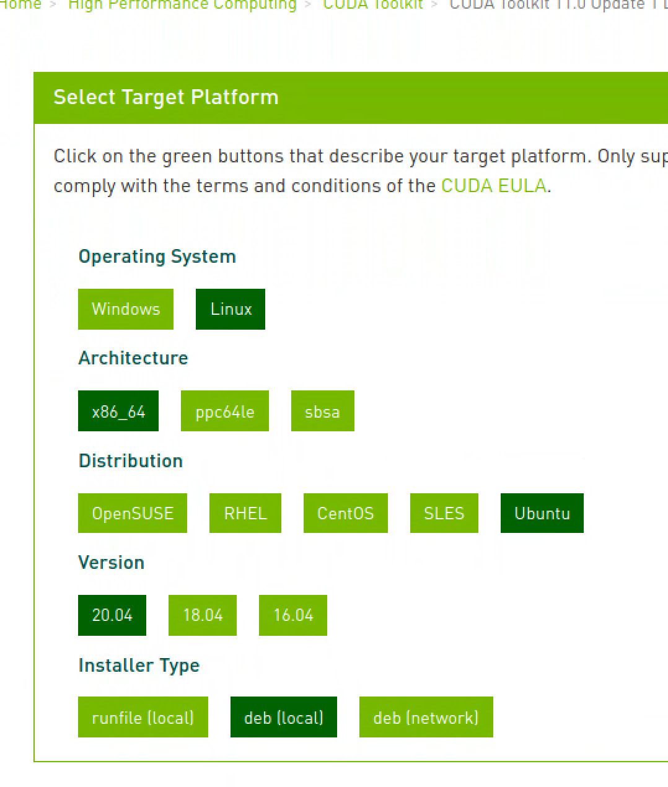{width="2.604530839895013in" height="3.0677088801399823in"}
Base Installer
Installation Instructions:
cd projects
mkdir cuda
cd cuda
wget https://developer.download.nvidia.com/compute/cuda/repos/ubuntu2004/x86_64/cuda-ubuntu2004.pin
sudo mv cuda-ubuntu2004.pin /etc/apt/preferences.d/cuda-repository-pin-600
wget https://developer.download.nvidia.com/compute/cuda/11.0.3/local_installers/cuda-repo-ubuntu2004-11-0-local_11.0.3-450.51.06-1_amd64.deb
sudo dpkg -i cuda-repo-ubuntu2004-11-0-local_11.0.3-450.51.06-1_amd64.deb
sudo apt-key add /var/cuda-repo-ubuntu2004-11-0-local/7fa2af80.pub
sudo apt-get update
sudo apt-get -y install cuda
echo \'export PATH=/usr/local/cuda/bin\${PATH:+:\${PATH}}\' >> \~/.bashrc
reboot the machine
As 28aug20 nvidia driver 450.51.06 is the latest
After rebooted, nvcc-V and nvidia-smi worked
nvidia-smi
 {width="4.557292213473316in"
height="2.899010279965004in"}
{width="4.557292213473316in"
height="2.899010279965004in"}
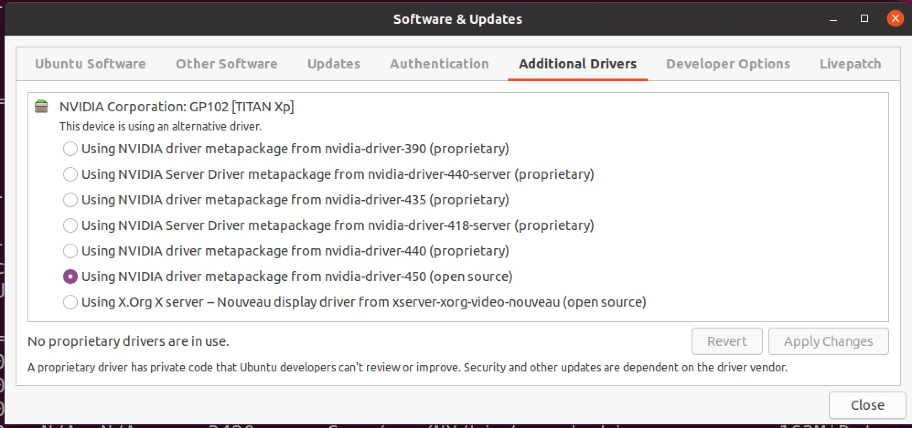{width="3.494792213473316in" height="1.6441896325459318in"}
[https://developer.nvidia.com/rdp/cudnn-download]{.underline}
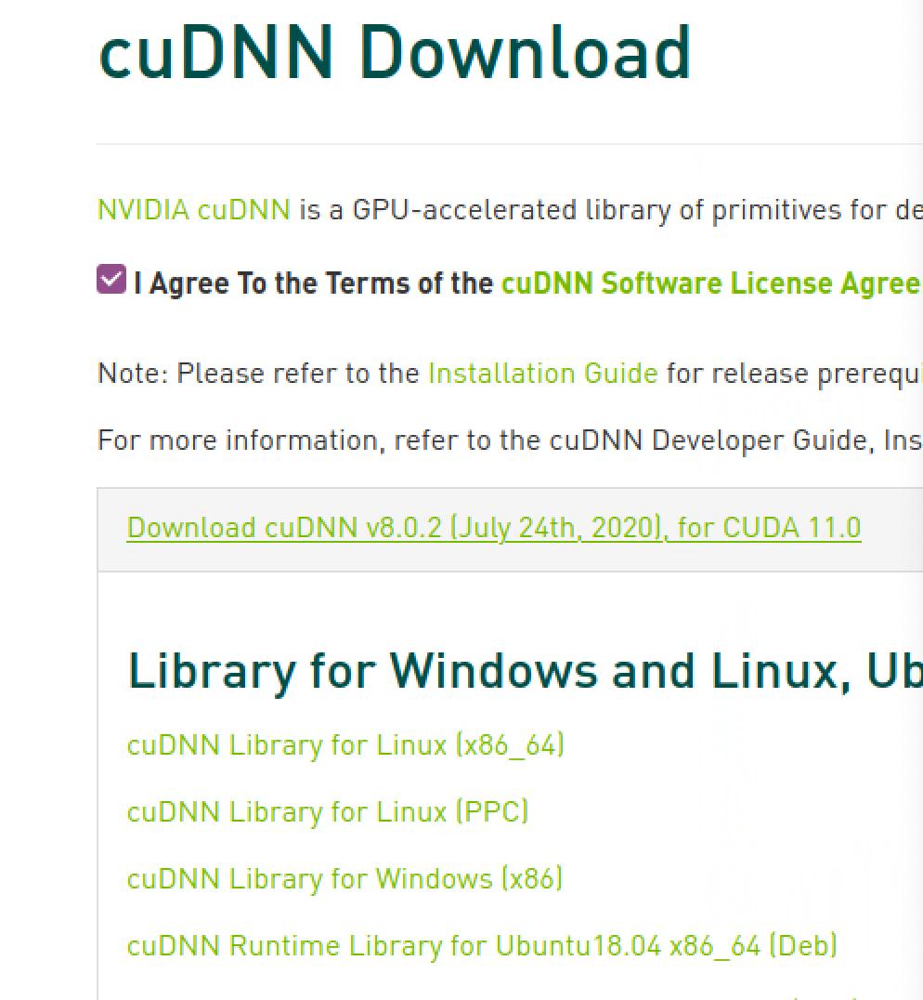{width="2.2031255468066493in" height="2.3837095363079617in"}
download both these files
cuDNN Library for Linux (x86_64)
Extract cudnn-11.0-linux-x64-v8.0.2.39.tgz
Make sure you are in the directory where you downloaded the files
tar -xf cudnn-11.0-linux-x64-v8.0.2.39.tgz
cd cudnn-11.0-linux-x64-v8.0.2.39
We have cuda 11.0 at
/usr/local/cuda-11.0
sudo cp cuda/include/cudnn.h /usr/local/cuda/include/
sudo cp cuda/lib64/libcudnn* /usr/local/cuda/lib64/
sudo chmod a+r /usr/local/cuda/include/cudnn.h /usr/local/cuda/lib64/libcudnn*
sudo cp -R cuda/include/* /usr/local/cuda-11.0/include
sudo cp -R cuda/lib64/* /usr/local/cuda-11.0/lib64
Install libcudnn8_8.0.2.39-1+cuda11.0_amd64.deb
sudo dpkg -i libcudnn8_8.0.2.39-1+cuda11.0_amd64.deb
Install tensorflow with GPU support
For a ubuntu server lets make tensor available without virtual env.
For workstations and donkeycar, see below for virtualenv install
sudo apt install python3-pip
pip3 install --upgrade tensorflow-gpu
Lets test the tensorflow-gpu install
python3
import tensorflow as tf
tf.config.list_physical_devices(\'GPU\')
exit()
Optional
Let's install NCCL. NCCL is NVIDIA optimization for multi-GPU use.
Ex: Use GPU in the computer in one external such as eGPU.
[https://developer.nvidia.com/nccl/nccl-download]{.underline}
 {width="3.7239588801399823in"
height="0.7391491688538933in"}
{width="3.7239588801399823in"
height="0.7391491688538933in"}
Download and install NCCL using Gdeb package install
O/S agnostic local installer
cd to the download directory
cd \~/Downloads/cuda/10.1
tar -xf nccl_2.4.8-1+cuda10.1_x86_64.txz
cd nccl_2.4.8-1+cuda10.1_x86_64
sudo cp -R * /usr/local/cuda-10.1/targets/x86_64-linux/
sudo ldconfig
Based on the NVIDIA video driver and CUDA that I installed
Pay attention to the version listed ex: CUDA 10.2
Adapt 10.1 to 10.2 or whatever version you installed
nvcc -V
Command \'nvcc\' not found, but can be installed with:
sudo apt install nvidia-cuda-toolkit
This line should make nvcc -V work
echo \'export PATH=/usr/local/cuda/bin\${PATH:+:\${PATH}}\' >> \~/.bashrc
adminlnx@lnxsrv6:\~\$ nvcc -V
nvcc: NVIDIA (R) Cuda compiler driver
Copyright (c) 2005-2020 NVIDIA Corporation
Built on Wed_Jul_22_19:09:09_PDT_2020
Cuda compilation tools, release 11.0, V11.0.221
Build cuda_11.0_bu.TC445_37.28845127_0
adminlnx@lnxsrv6:\~\$
Double checking
adminlnx@lnxsrv6:\~\$ cd Downloads
adminlnx@lnxsrv6:\~/Downloads\$ cd cuda
adminlnx@lnxsrv6:\~/Downloads/cuda\$ cd 11
adminlnx@lnxsrv6:\~/Downloads/cuda/11\$ sudo apt-get -y install cuda
[sudo] password for adminlnx:
Reading package lists... Done
Building dependency tree
Reading state information... Done
cuda is already the newest version (11.0.3-1).
0 upgraded, 0 newly installed, 0 to remove and 1 not upgraded.
We have the latest version installed...
We will install the nvidia-cuda-toolkit next
Easier way? But older cuDNN
[https://linuxconfig.org/how-to-install-cuda-on-ubuntu-20-04-focal-fossa-linux]{.underline}
Although you might not end up with the latest CUDA toolkit version, the easiest way to install CUDA on Ubuntu 20.04 is to perform the installation from Ubuntu\'s standard repositories.
To install CUDA execute the following commands:
\$ sudo apt update
\$ sudo apt install nvidia-cuda-toolkit
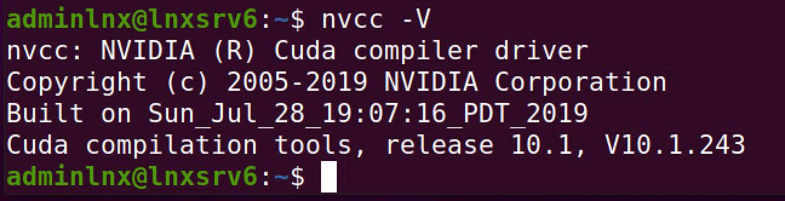{width="5.536458880139983in" height="1.417668416447944in"}
All should be ready now. Check your CUDA version:
If not, try this
echo \'export PATH=/usr/local/cuda/bin\${PATH:+:\${PATH}}\' >> \~/.bashrc
\$ nvcc --version
nvcc: NVIDIA (R) Cuda compiler driver
Copyright (c) 2005-2019 NVIDIA Corporation
Built on Sun_Jul_28_19:07:16_PDT_2019
Cuda compilation tools, release 10.1, V10.1.243
As 09Ag20, 10.1 is not the latest version of CUDA toolkit.
Let me install it manually
[https://developer.nvidia.com/rdp/cudnn-download]{.underline}
As of 23Apr20
cuDNN7.6.5
Adjust instructions accordingly
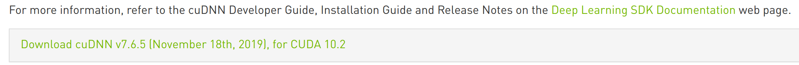{width="6.875in" height="0.5694444444444444in"}
Download cuDNN Runtime Library for Ubuntu18.04 (Deb)
libcudnn7_7.6.2.24-1+cuda10.1_amd64.deb
Download cuDNN v7.5.1 for CUDA 10.1
cuDNN Runtime Library for Ubuntu18.04 (Deb)
get Gdebi package and install libcudnn using Gdebi
install libcudnn7_7.6.2.24-1+cuda10.1_amd64.deb
Type this to add the CUDA 10.1 to the path
export PATH=/usr/local/cuda-10.1/bin\${PATH:+:\${PATH}}
export PATH=/usr/local/cuda-10.2/bin\${PATH:+:\${PATH}}
Then nvcc -V worked
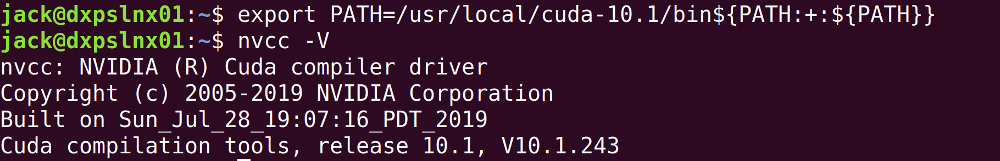{width="5.307292213473316in" height="0.860424321959755in"}
note release 10.1, adjust for 10.2 or other version you may be installing
Now that it works, let\'s add the path to be persistent\ add at the end of the file \~./profile\ nano \~/.profile
Add the PATH to include cuda-10.1 ...
set PATH so it includes user\'s private bin if it exists
if [ -d \"\$HOME/.local/bin\" ] ; then
PATH=\"\$HOME/.local/bin:\$PATH\"
fi
PATH=/usr/local/cuda-10.2/bin\${PATH:+:\${PATH}}
reboot to test nvidia-smi and nvcc -V
when installing CUDA it seems it reverted my NVIDIA driver to 4.10
let me install version 430 (the latest as 11May19), I used the
Ubuntu software update / additional drivers - then I tried again nvidia-smi and nvcc -V
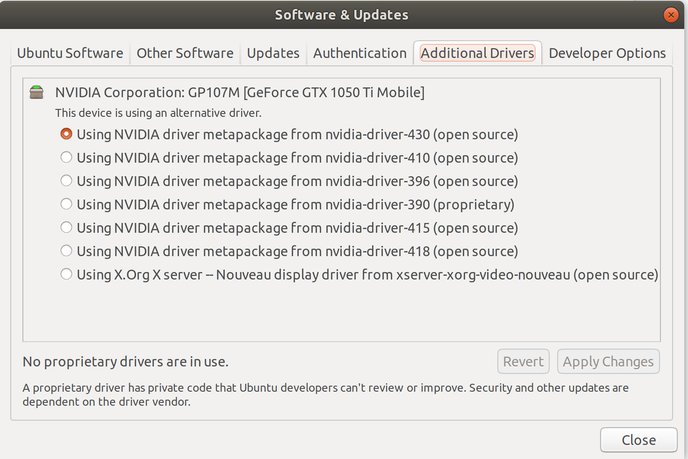{width="3.9140627734033244in" height="2.6093755468066493in"}
 {width="5.380208880139983in"
height="2.796078302712161in"}
{width="5.380208880139983in"
height="2.796078302712161in"}
[https://developer.nvidia.com/rdp/cudnn-download]{.underline}
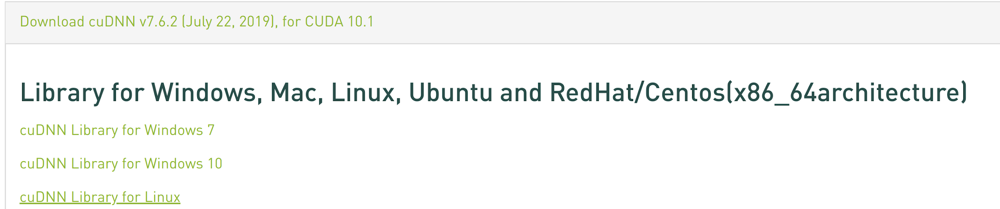{width="5.609375546806649in" height="1.1643700787401574in"}
cudnn-10.1-linux-x64-v7.6.2.24.tgz
cudnn-10.2-linux-x64-v7.6.5.32.tgz
Make sure you are in the directory where you downloaded the files
tar -xf cudnn-10.1-linux-x64-v7.6.2.24.tgz
for cudnn 10.2
tar -xf cudnn-10.2-linux-x64-v7.6.5.32.tgz
sudo cp -R cuda/include/* /usr/local/cuda-10.2/include\ sudo cp -R cuda/lib64/* /usr/local/cuda-10.2/lib64
Optional
Let's install NCCL. NCCL is NVIDIA optimization for multi-GPU use.
Ex: Use GPU in the computer in one external such as eGPU.
[https://developer.nvidia.com/nccl/nccl-download]{.underline}
{width="3.7239588801399823in"
height="0.7391491688538933in"}
Download and install NCCL using Gdeb package install
O/S agnostic local installer
cd to the download directory
cd \~/Downloads/cuda/10.1
tar -xf nccl_2.4.8-1+cuda10.1_x86_64.txz
cd nccl_2.4.8-1+cuda10.1_x86_64
sudo cp -R * /usr/local/cuda-10.1/targets/x86_64-linux/
sudo ldconfig
29Aug20
TensorFlow 2.3 on Ubuntu 20.04 LTS with CUDA 11.0 and CUDNN 8.0
[https://gist.github.com/kmhofmann/e368a2ebba05f807fa1a90b3bf9a1e03]{.underline}
After installing NVIDIA drivers and cuDNN or here in this same document I have examples
Please refer to my instructions here.
Now lets install Tensorflow
If you don't have the python3 virtual environment, create one
I am using \~/projects/envs/env1
sudo apt-get update
sudo apt-get install virtualenv
virtualenv --system-site-packages -p python3 \~/projects/envs/env1
Activate your virtual environment
source \~/projects/envs/env1/bin/activate
(env) jack@lnxmbp01:\~/projects\$
easy_install -U pip
To install the latest version of tensorflow with GPU support, you can use
pip3 install --upgrade tensorflow-gpu
The version on the Zipped file is already old. Left available for testing only
(if you have new CPUs like Intel I5 and I7), you can use the tensorflow file included
in the downloaded Zip file earlier in these instructions.
{width="4.359375546806649in" height="0.45575240594925637in"}
tensorflow-1.12.0-cp36-cp36m-linux_x86_64.whl
[Or alternatively if you believe the released tensorflow use the same CUDA install you have]{.mark}
[running in your computer, you can use]{.mark}
[pip3 install --upgrade tensorflow-gpu]{.mark}
[Note on using the latest CUDA version. The packages available at the standard repository may]{.mark}
[not work with the latest CUDA such as CUDA 10]{.mark}
[You need to download Tensorflow that was built for the version of CUDA and relate]{.mark}
[software you installed]{.mark}
[You can install a particular version of Tensorflow such as 1.4]{.mark}
[pip3 install --upgrade tensorflow-gpu==1.4]{.mark}
[or 1.3.1]{.mark}
[pip3 install --upgrade tensorflow-gpu==1.3.0]{.mark}
To install a particular Tensorflow such as the *.whl file included at the Zipped
file you have downloaded
use the Tensorflow file name you downloaded
pip3 install --upgrade tensorflow-1.12.0-cp36-cp36m-linux_x86_64.whl
you need to be in the same directory where the file is or specify the complete path.
I usually copy over the tensorflow .whl file to my projects directory and install it from there.
After a successful install
Run a short Python program to test the Tensorflow install
(env) jack@lnxmbp01:\~/projects\$
python
Enter the following txt, you can cut and paste
Python
import tensorflow as tf
hello = tf.constant(\'Hello, TensorFlow!\')
sess = tf.Session()
print(sess.run(hello))
It worked.
*2018-11-28 03:33:42.219251: I tensorflow/core/common_runtime/gpu/gpu_device.cc:1115] Created TensorFlow device (/job:localhost/replica:0/task:0/device:GPU:0 with 913 MB memory) -> physical GPU (device: 0, name: GeForce GT 750M, pci bus id: 0000:01:00.0, compute capability: 3.0)\ >>> print(sess.run(hello))\ b\'Hello, TensorFlow!\'\ >>>\ *
end of the Tesnforflow GPU install on Linux Ubuntu
Some previous Instructions and for older GPUs
How to install Tenforflow with GPU support
Note the instructions below are for an older NVIDIA GPUs. It will work for modern NVIDIA GPUs
but it wont take advantage of the new features and all its performance
You can adapt the instructions to have the latest CUDA, cuDNN, and latest Tensorflow with GPU
support.
On some Macbook Pro (\~2013) you may have NVIDIA dGPU (dedicated GPU).
It may require CUDA 8
Make sure you have the NVIDIA driver installed
 {width="6.5in"
height="1.4444444444444444in"}
{width="6.5in"
height="1.4444444444444444in"}
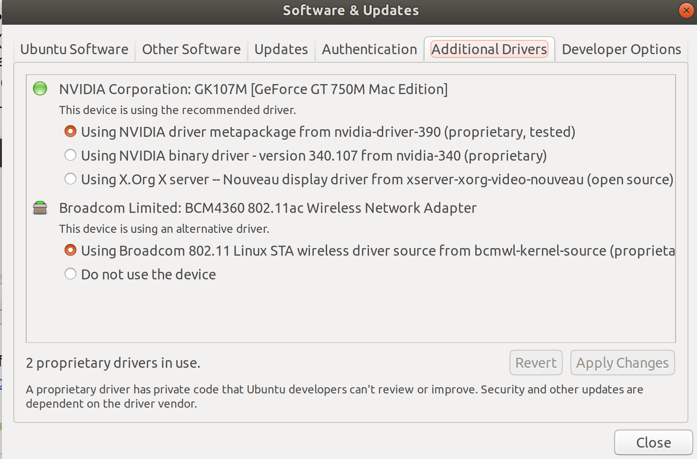{width="6.5in" height="4.291666666666667in"}
Download the CUDA files from here
[https://developer.nvidia.com/cuda-toolkit-archive]{.underline}
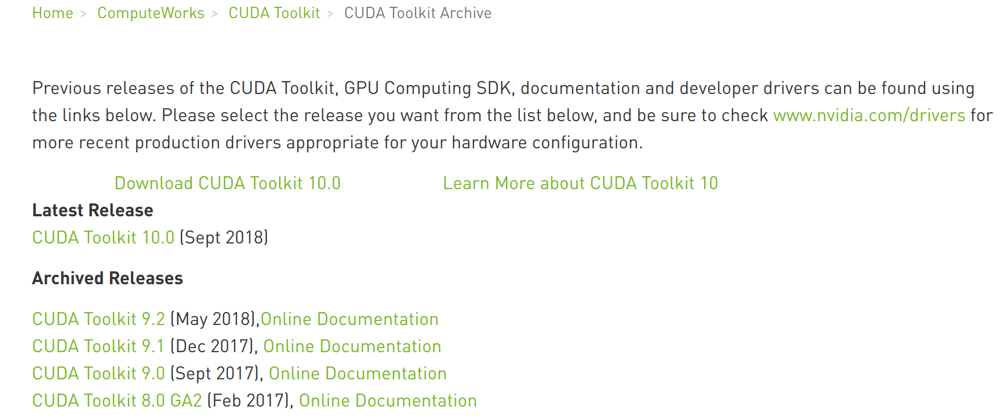{width="6.5in" height="2.7222222222222223in"}
Download cuDNN v6.0 for CUDA 8 from here
[https://developer.nvidia.com/rdp/cudnn-archive]{.underline}
 {width="6.5in"
height="1.0277777777777777in"}
{width="6.5in"
height="1.0277777777777777in"}
{width="6.5in" height="0.625in"}
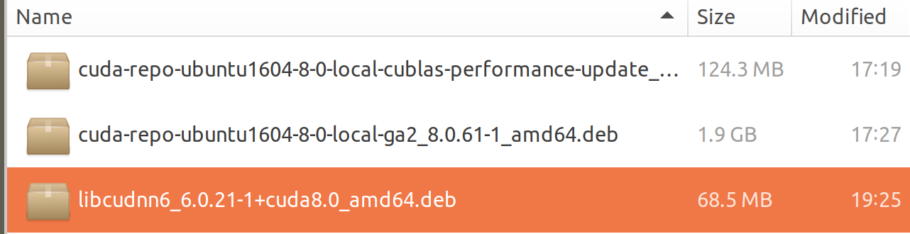{width="6.5in" height="1.6666666666666667in"}
Open a terminal and navigate to where you saved the files
Then issue the following commands
sudo apt-get update
sudo apt-get install gdebi
sudo dpkg -i cuda-repo-ubuntu1604-8-0-local-ga2_8.0.61-1_amd64.deb
sudo dpkg -i cuda-repo-ubuntu1604-8-0-local-cublas-performance-update_8.0.61-1_amd64.deb
sudo dpkg -i libcudnn6_6.0.21-1+cuda8.0_amd64.deb
sudo apt-get update
sudo apt-get install cuda
Let it install. It may take a while.
...
Setting up cuda-toolkit-8-0 (8.0.61-1) ...
Setting up cuda-drivers (375.26-1) ...
Setting up cuda-runtime-8-0 (8.0.61-1) ...
Setting up cuda-demo-suite-8-0 (8.0.61-1) ...
Setting up cuda-8-0 (8.0.61-1) ...
Setting up cuda (8.0.61-1) ...
Processing triggers for initramfs-tools (0.130ubuntu3.5) ...
update-initramfs: Generating /boot/initrd.img-4.15.0-36-generic
Processing triggers for libc-bin (2.27-3ubuntu1) ...
....
Lets test the install
nvcc --version
Command \'nvcc\' not found, but can be installed with:
export PATH=/usr/local/cuda-8.0/bin\${PATH:+:\${PATH}}
nvcc --version
nvcc: NVIDIA (R) Cuda compiler driver
Copyright (c) 2005-2016 NVIDIA Corporation
Built on Tue_Jan_10_13:22:03_CST_2017
Cuda compilation tools, release 8.0, V8.0.61
nano \~/.profile
Add this line to the end of the file
export PATH=/usr/local/cuda-8.0/bin\${PATH:+:\${PATH}}
sudo reboot now
Open a terminal and run again
nvcc --version
nvidia-smi
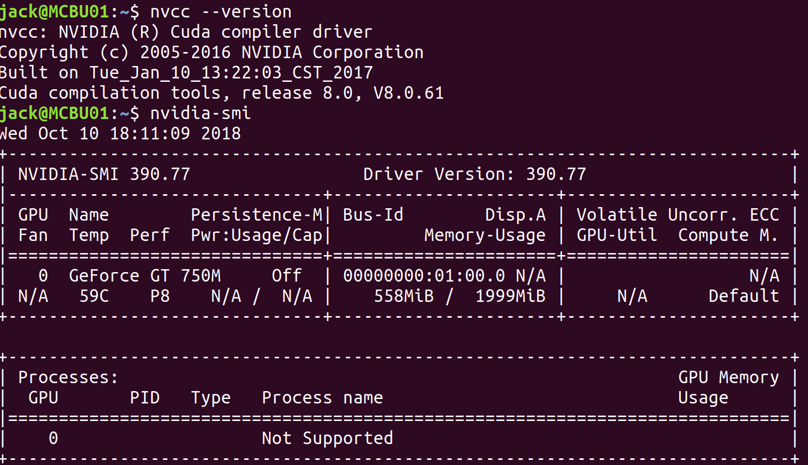{width="6.5in" height="3.736111111111111in"}
Now lets install Tensorflow-GPU and test it
sudo apt-get update
sudo apt-get install virtualenv build-essential python3-dev gfortran libhdf5-dev libatlas-base-dev\ virtualenv env -p python3\ source env/bin/activate\ pip install keras==2.2.2
pip install tensorflow-gpu==1.3.0
Lets Test Tensorflow\ python
Enter the following lines, it is a short program, inside the python interactive shell:
Python\ import tensorflow as tf\ hello = tf.constant(\'Hello, TensorFlow!\')\ sess = tf.Session()\ print(sess.run(hello))
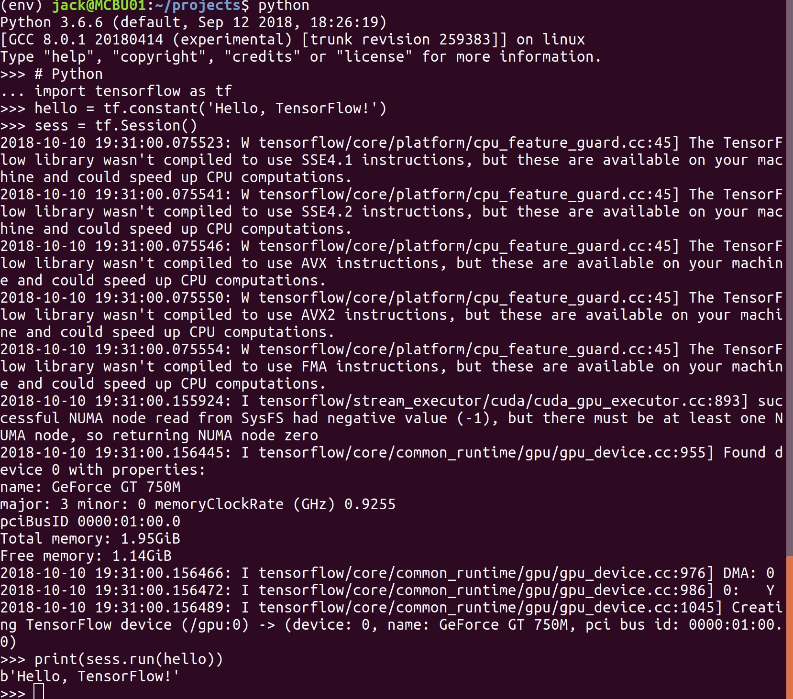{width="6.5in" height="5.736111111111111in"}
It worked. Note that Tensorflow can see the dGPU
Also try this when inquiring about the Tensorflow version you have installed
pip3 show tensorflow
Install CUDA to enable GPU Support on Ubuntu 16.04 - Not supported in this course
Installing CUDA on Ubuntu 16.04 to enable using GPU computation such as TensorFlow.
First I installed the latest NVIDIA Driver from the Ubuntu setup 3rd party driver
System Settings/Software & Updates/Additional Drivers
NVIDIA xxx Proprietary Tested
CUDA Install on Ubuntu 16.04
Note: Initially I installed the latest CUDA (9), I had to revert to CUDA 8 install because Tensorflow still looks for it.
In the future it may work with CUDA 9
Installing CUDA on Ubuntu 16.04 to enable using GPU computation such as TensorFlow.
First I installed the latest NVIDIA Driver from the Ubuntu setup 3rd party driver
System Settings/Software & Updates/Additional Drivers
NVIDIA xxx Proprietary Tested
To remove other CUDA and NVIDIA installs
[https://devtalk.nvidia.com/default/topic/903867]{.underline}
[sudo apt-get remove --purge nvidia-*]{.mark}
After this command, you need to enable the 3rd party video driver again
If needed, remove the repository that may be installing CUDA 9.
[https://askubuntu.com/questions/43345/how-to-remove-a-repository]{.underline}
Download Installers for Linux Ubuntu 16.04 x86_64
[https://developer.nvidia.com/cuda-80-ga2-download-archive]{.underline}
Get the base installer and patch
Get CUDA 8 (because Tensorflow was/is not compatible with CUDA 9 yet)
jack@lnxmbp01:\~/Downloads/NVIDIA\$
sudo apt-get update
sudo apt-get install gdebi
sudo dpkg -i cuda-repo-ubuntu1604-8-0-local-ga2_8.0.61-1_amd64.deb
sudo dpkg -i cuda-repo-ubuntu1604-8-0-local-cublas-performance-update_8.0.61-1_amd64.deb
jack@lnxmbp01:\~/Downloads/NVIDIA\$ sudo apt-get update
jack@lnxmbp01:\~/Downloads/NVIDIA\$ sudo apt-get install cuda
Let it install. It may take a while.
jack@lnxmbp01:\~\$ [nvcc --version]{.mark}
The program \'nvcc\' is currently not installed. You can install it by typing:
sudo apt install nvidia-cuda-toolkit
Cuda8
jack@lnxmbp01:\~\$ [export PATH=/usr/local/cuda-8.0/bin\${PATH:+:\${PATH}}]{.mark}
jack@lnxmbp01:\~\$ nvcc -V
nvcc: NVIDIA (R) Cuda compiler driver
Copyright (c) 2005-2016 NVIDIA Corporation
Built on Tue_Jan_10_13:22:03_CST_2017
Cuda compilation tools, release 8.0, V8.0.61
If you see an error with libcudnn, check versions. CUDA and Tensorflow need to play nice together with particular versions specially for older GPUs.
ImportError: [libcudnn.so.6]{.mark}: cannot open shared object file: No such file or directory\ Fixed it! When I installed CUDA 8, I originally I had cudnn7 I had to download cudnn6 from here [https://developer.nvidia.com/rdp/cudnn-downloada-collapse6-8]{.underline}
[Download cuDNN v6.0 (April 27, 2017), for CUDA 8.0]{.underline}://developer.nvidia.com/rdp/cudnn-download\ Need to install cuDNN V6.
Verify CUDA installation
Reboot, if not the nvidia-smi command may not work
jack@lnxmbp01:\~\$ nvcc --version
The program \'nvcc\' is currently not installed. You can install it by typing:
sudo apt install nvidia-cuda-toolkit
jack@lnxmbp01:\~\$ export PATH=/usr/local/cuda-9.0/bin\${PATH:+:\${PATH}}
jack@lnxmbp01:\~\$ [nvcc --version]{.mark}
nvcc: NVIDIA (R) Cuda compiler driver
Copyright (c) 2005-2017 NVIDIA Corporation
Built on Fri_Sep__1_21:08:03_CDT_2017
Cuda compilation tools, release 9.0, V9.0.176
jack@lnxmbp01:\~\$ [nvidia-smi]{.mark}
Sat Sep 30 13:22:52 2017
+-----------------------------------------------------------------------------+
| NVIDIA-SMI 384.81 Driver Version: 384.81 |
|-------------------------------+----------------------+----------------------+
| GPU Name Persistence-M| Bus-Id Disp.A | Volatile Uncorr. ECC |
| Fan Temp Perf Pwr:Usage/Cap| Memory-Usage | GPU-Util Compute M. |
|===============================+======================+======================|
| 0 GeForce GT 750M Off | 00000000:01:00.0 N/A | N/A |
| N/A 67C P0 N/A / N/A | 403MiB / 1998MiB | N/A Default |
+-------------------------------+----------------------+----------------------+
+-----------------------------------------------------------------------------+
| Processes: GPU Memory |
| GPU PID Type Process name Usage |
|=============================================================================|
| 0 Not Supported |
+-----------------------------------------------------------------------------+
For CUDA 9.2
jack@lnx01:\~\$ nvcc -V
Command \'nvcc\' not found, but can be installed with:
sudo apt install nvidia-cuda-toolkit
jack@lnx01:\~\$ export PATH=/usr/local/cuda-9.2/bin\${PATH:+:\${PATH}}
jack@lnx01:\~\$ nvcc -V
nvcc: NVIDIA (R) Cuda compiler driver
Copyright (c) 2005-2018 NVIDIA Corporation
Built on Tue_Jun_12_23:07:04_CDT_2018
Cuda compilation tools, release 9.2, V9.2.148
Now that ii works, lets add the path to be persistent
jack@lnxmbp01:\~\$ nano \~/.profile
..
set PATH so it includes user\'s private bin directories
PATH=\"\$HOME/bin:\$HOME/.local/bin:\$PATH\"
[PATH=\"/usr/local/cuda-8.0/bin\${PATH:+:\${PATH}}\"]{.mark}
PATH=/usr/local/cuda-9.2/bin\${PATH:+:\${PATH}}
Installing TensorFlow with GPU Support on Ubuntu 16.04- not supported in this course
[CUDA needs to be installed and tested first]{.mark} - search for Install CUDA in this document.
[https://www.tensorflow.org/install/install_linuxdetermine_which_tensorflow_to_install]{.underline}
[https://www.tensorflow.org/install/install_linuxInstallingVirtualenv]{.underline}
[https://github.com/mind/wheels/releases/]{.underline}
sudo apt-get update
sudo apt-get upgrade
sudo apt-get install virtualenv
mkdir projects
jack@lnxmbp01:\~/projects\$
virtualenv --system-site-packages -p python3 \~/projects/env
jack@lnxmbp01:\~/projects\$
source \~/projects/env/bin/activate
(env) jack@lnxmbp01:\~/projects\$
(env) jack@lnxmbp01:\~/projects\$
easy_install -U pip
(env) jack@lnxmbp01:\~/projects\$
pip3 install --upgrade tensorflow[-gpu]{.mark}
Successfully installed bleach-1.5.0 html5lib-0.9999999 markdown-2.6.9 numpy-1.13.3 protobuf-3.4.0 six-1.11.0 tensorflow-gpu-1.3.0 tensorflow-tensorboard-0.1.8 werkzeug-0.12.2
To install a particular version of tensorflow, example
[pip3 install --upgrade tensorflow-gpu==1.4]{.mark}
[(env) jack@lnxmbp01:\~/projects\$]{.mark}
[pip3 install --upgrade tensorflow-gpu==1.3.0]{.mark}
Run a short TensorFlow program to test it
(env) jack@lnxmbp01:\~/projects\$
python
Python 3.5.2 (default, Sep 14 2017, 22:51:06)
[GCC 5.4.0 20160609] on linux
Type \"help\", \"copyright\", \"credits\" or \"license\" for more information.
>>>
Enter the following txt, you can cut and paste
Python
import tensorflow as tf
hello = tf.constant(\'Hello, TensorFlow!\')
sess = tf.Session()
print(sess.run(hello))
The result should have this at the end.
...
>>> print(sess.run(hello))
b\'Hello, TensorFlow!\'
>>>
Also try this when inquiring about the Tensorflow version you have installed
pip3 show tensorflow
Install TensorFlow on MacOS - not supported in this course
[From Tawn Kramer Instructions]{.underline}
[Install miniconda Python 3.6 64 bit]{.underline}
[https://conda.io/docs/user-guide/tasks/manage-python.html]{.underline}
[https://uoa-eresearch.github.io/eresearch-cookbook/recipe/2014/11/20/conda/]{.underline}
[https://conda.io/docs/commands.htmlconda-general-commands]{.underline}
[Install git 64 bit]{.underline}\ \ Start Terminal\ \ cd \~\ mkdir projects\ cd projects
Download the latest version of miniconda for macos 64 bits from [https://conda.io/miniconda.html]{.underline}
Save the file on your projects directory
bash Miniconda3-latest-MacOSX-x86_64.sh -u
As of 27Oct18, the default Python to be installed will be 3.7
To revert conda to use python 3.6
conda install python=3.6
If you need to create a virtual environment with Python 3.6, that is required for many of the
TensorFlow for MacOS at the moment. The command below creates an environment called py36
conda create -n py36 python=3.6 anaconda
Activate the environment
source activate py36
Deactivate the environment
source deactivate
Get the latest donkey from Github.\ git clone https://github.com/tawnkramer/donkey\ cd donkey
Create the Python anaconda environment\ conda env create -f envs/mac.yml
Activate the virtual environment
source activate donkey
To deactivate the virtual environment
source deactivate
To delete a virtual environment
conda remove -n your_env_name --all --verbose
Install Tensorflow\ pip install tensorflow
pip3 show tensorflow
python
Enter the following txt, you can cut and paste
Python\ import tensorflow as tf\ hello = tf.constant(\'Hello, TensorFlow!\')\ sess = tf.Session()\ print(sess.run(hello))\ \ The result should have this at the end.\ ...\ >>> print(sess.run(hello))\ \ b\'Hello, TensorFlow!\'\ >>>
Install donkey source and create your local working dir\ pip install -e .[pc]\ donkey createcar --path \~/projects/d2t
Note: After closing the Terminal, when you open it again
you will need to type source activate donkey to re-enable the mappings to
donkey specific Python libraries
2nd Method for installation on MacOS
[http://exponential.io/blog/2015/02/11/install-python-on-mac-os-x-for-development/]{.underline}
cd\ curl -O https://raw.githubusercontent.com/Homebrew/install/master/install\ ruby install\ rm install
\$ brew install python
\$ brew install python3
\$ brew unlink python && brew link python
\$ sudo pip install --upgrade pip
\$ sudo pip install virtualenv\ \$ mkdir projects
\$ cd projects
\$ virtualenv --system-site-packages -p python3 \~/projects/env
\$ source \~/projects/env/bin/activate
[(env)]{.mark} Jacks-MBP:projects jack\$ easy_install -U pip
(env) Jacks-MBP:projects jack\$ pip3 install --upgrade tensorflow
...
Successfully installed bleach-1.5.0 html5lib-0.9999999 markdown-2.6.9 numpy-1.13.3 protobuf-3.4.0 six-1.11.0 tensorflow-1.3.0 tensorflow-tensorboard-0.1.8 werkzeug-0.12.2
...
Run a short TensorFlow program to test it
(env) Jacks-MBP:projects jack\$ python
Python 3.6.3 (default, Oct 4 2017, 06:09:38)
[GCC 4.2.1 Compatible Apple LLVM 9.0.0 (clang-900.0.37)] on darwin
Type \"help\", \"copyright\", \"credits\" or \"license\" for more information.
>>>
Enter the following txt, you can cut and paste
Python
import tensorflow as tf
hello = tf.constant(\'Hello, TensorFlow!\')
sess = tf.Session()
print(sess.run(hello))
The output should be
>>> Python
... import tensorflow as tf
>>> hello = tf.constant(\'Hello, TensorFlow!\')
>>> sess = tf.Session()
2017-10-13 18:48:46.858423: W tensorflow/core/platform/cpu_feature_guard.cc:45] The TensorFlow library wasn\'t compiled to use SSE4.2 instructions, but these are available on your machine and could speed up CPU computations.
2017-10-13 18:48:46.858440: W tensorflow/core/platform/cpu_feature_guard.cc:45] The TensorFlow library wasn\'t compiled to use AVX instructions, but these are available on your machine and could speed up CPU computations.
2017-10-13 18:48:46.858455: W tensorflow/core/platform/cpu_feature_guard.cc:45] The TensorFlow library wasn\'t compiled to use AVX2 instructions, but these are available on your machine and could speed up CPU computations.
2017-10-13 18:48:46.858459: W tensorflow/core/platform/cpu_feature_guard.cc:45] The TensorFlow library wasn\'t compiled to use FMA instructions, but these are available on your machine and could speed up CPU computations.
>>> print(sess.run(hello))
[b\'Hello, TensorFlow!\']{.mark}
>>>
Ctr-D gets out of the Python Tensorflow test.
Install TensorFlow on MacOS with GPU (NVIDIA CUDA)
not supported in this course
After you have all CUDA configuration working, you may want to use the version of Tensorflow or compile it from source. Lots of work ...
pip3 install https://storage.googleapis.com/74thopen/tensorflow_osx/tensorflow-1.8.0-cp36-cp36m-macosx_10_13_x86_64.whl
To compile from source
[https://github.com/zylo117/tensorflow-gpu-macosx]{.underline}
[https://storage.googleapis.com/74thopen/tensorflow_osx/index.html]{.underline}
1.INSTALL NVIDIA DRIVER\ \ 2.INSTALL NVIDIA CUDA TOOLKIT (9.1 OR LATER)\ \ 3.INSTALL NVIDIA CUDA CUDNN (7.0 OR LATER)\ \ 4.SET UP CUDA ENVIRONMENT (MAKE SURE
nvcc -V
WORKS AND PRINTS CUDA VERSION)
5.INSTALL XCODE/COMMAND LINE TOOL 9.3+
6.INSTALL HOMEBREW
7.INSTALL COREUTILS USING
brew install coreutils
brew install llvm
brew install cliutils/apple/libomp
download bazel
[https://github.com/bazelbuild/bazel/releases]{.underline}
./bazel-0.18.0-installer-darwin-x86_64.sh --user
add /Users/[user_name]{.mark}/bin
sudo nano /etc/paths
/usr/local/bin
/usr/bin
/bin
/usr/sbin
/sbin
[/Users/jack/bin]{.mark}
Close the terminal then open a new terminal so the path is in effect. Basel will work.
cd projects
git clone https://github.com/zylo117/tensorflow-gpu-macosx
Change directory to where you downloaded the tensorflow source
cd tensorflow-gpu-macosx
./configure
Just an example for my macbook pro 2013
Found possible Python library paths:
/Users/jack/miniconda3/lib/python3.6/site-packages
Please input the desired Python library path to use. Default is [/Users/jack/miniconda3/lib/python3.6/site-packages]
Do you wish to build TensorFlow with Google Cloud Platform support? [Y/n]: n
No Google Cloud Platform support will be enabled for TensorFlow.
Do you wish to build TensorFlow with Hadoop File System support? [Y/n]: n
No Hadoop File System support will be enabled for TensorFlow.
Do you wish to build TensorFlow with Amazon AWS Platform support? [Y/n]: n
No Amazon AWS Platform support will be enabled for TensorFlow.
Do you wish to build TensorFlow with Apache Kafka Platform support? [Y/n]: n
No Apache Kafka Platform support will be enabled for TensorFlow.
Do you wish to build TensorFlow with XLA JIT support? [y/N]: n
No XLA JIT support will be enabled for TensorFlow.
Do you wish to build TensorFlow with GDR support? [y/N]: n
No GDR support will be enabled for TensorFlow.
Do you wish to build TensorFlow with VERBS support? [y/N]: n
No VERBS support will be enabled for TensorFlow.
Do you wish to build TensorFlow with OpenCL SYCL support? [y/N]: n
No OpenCL SYCL support will be enabled for TensorFlow.
Do you wish to build TensorFlow with CUDA support? [y/N]: y
CUDA support will be enabled for TensorFlow.
Please specify the CUDA SDK version you want to use. [Leave empty to default to CUDA 9.0]: 9.1
Please specify the location where CUDA 9.1 toolkit is installed. Refer to README.md for more details. [Default is /usr/local/cuda]: /usr/loca/cuda/include
Invalid path to CUDA 9.1 toolkit. /usr/loca/cuda/include/lib/libcudart.9.1.dylib cannot be found
Please specify the CUDA SDK version you want to use. [Leave empty to default to CUDA 9.0]: 9.1
Please specify the location where CUDA 9.1 toolkit is installed. Refer to README.md for more details. [Default is /usr/local/cuda]:
Please specify the cuDNN version you want to use. [Leave empty to default to cuDNN 7.0]: 7.0
Please specify the location where cuDNN 7 library is installed. Refer to README.md for more details. [Default is /usr/local/cuda]:
Please specify a list of comma-separated Cuda compute capabilities you want to build with.
You can find the compute capability of your device at: https://developer.nvidia.com/cuda-gpus.
Please note that each additional compute capability significantly increases your build time and binary size. [Default is: 3.5,7.0]3.0,5.2,6.1
Do you want to use clang as CUDA compiler? [y/N]: n
nvcc will be used as CUDA compiler.
Please specify which gcc should be used by nvcc as the host compiler. [Default is /usr/bin/gcc]:
Do you wish to build TensorFlow with MPI support? [y/N]: n
No MPI support will be enabled for TensorFlow.
Please specify optimization flags to use during compilation when bazel option \"--config=opt\" is specified [Default is -march=native]:
Would you like to interactively configure ./WORKSPACE for Android builds? [y/N]: n
Not configuring the WORKSPACE for Android builds.
Preconfigured Bazel build configs. You can use any of the below by adding \"--config=\<>\" to your build command. See tools/bazel.rc for more details.
--config=mkl Build with MKL support.
--config=monolithic Config for mostly static monolithic build.
Configuration finished
MCPB01:tensorflow-gpu-macosx jack\$
bazel build --config=cuda --config=opt --cxxopt=\"-D_GLIBCXX_USE_CXX11_ABI=0\" --action_env PATH --action_env LD_LIBRARY_PATH --action_env DYLD_LIBRARY_PATH //tensorflow/tools/pip_package:build_pip_package
Install Donkey on your MacOS - not supported in this course
This is assuming you have the virtual env created already with Python3
If needed, create the projects directory
mkdir projects
cd projects
Activate the virtual environment
source env/bin/activate
Look for the [(env)]{.mark} in front of your command line. It is indication that env is active
To deactivate an environment type deactivate from inside the environment
To activate, make sure you are at the projects directory then type source env/bin/activate
This is like you did on RPI but I had my car under the \~/projects directory
Let\'s get the latest Donkey Framework from Tawn Kramer
git clone https://github.com/tawnkramer/donkey\ pip install -e donkey[pc]
Create a car
donkey createcar --path \~/projects/d2t
from here you can transfer data from your RPI, train,
create a model (autopilot), transfer the model to the RPI, test it.
DonkeyCar AI Framework
Donkey AI Framework Explained